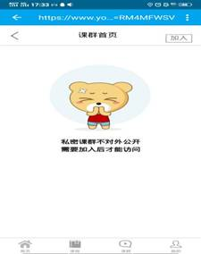
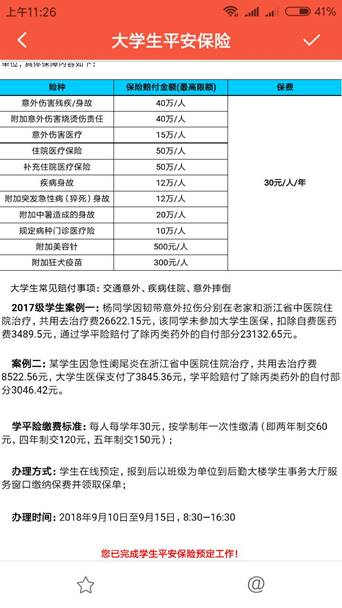

2019 年浙江理工大学
新 生 须知
巍巍百年学府 青春值得托付
非官方
2019.7
本须知并非学校官方入学新生资料、所有数据、资料来自互联网、学长学姐讲述。
2019年浙江理工大学新官方生入学资料将会在浙理微学工微信公众号推送，如有和本须知冲突部分，以浙理微学工微信公众号推送为准。
有些信息年代久远，无法一一验证，难免出错，请谅解！
所有内容出现的学校组织以及社团，在此表示鸣谢，因未提前告知引用其文章及其作品，如有侵权行为，请联系我们。
谨防不法分子假冒学校、学长等名义的诈骗行为。学生及家长如遇要求紧急汇款等异常情况，请及时与学校联系、核实，以免造成不必要的损失。
我们不是信息的制造者，我们只是互联网的搬运工！
更新日志：
2019.6.26
---创建文档、编写基本信息
2019.7.1
---内容删改、审查、排版
2019.7.8
---内容结构调整
2019.7.11
---更新社团评级信息
---更新安全专题
2019.7.11
---添加安全专题内容
2019.7.12
---添加军训详细情况描述
---内容结构调整、添加硬件设施专题、部分专题名称调整、合并个人指南、学习指南专题、信息公共服务指南专题、安全指南专题、消费指南专题、信息化服务专题
---添加培养计划概述以及下载
---添加校内网开通教程
2019.7.16
---更新电话卡资费
2019.7.21
---更新录取通知书、校历
2019.7.23
---更新第二课堂学分获取途径
2019.7.24
---添加信息化服务-网站、军训-军训要点
2019.7.29
---添加安全指南-常见诈骗伎俩
2019.7.30
---添加安全指南-常见学长套路
2019.8.15
---更新个人服务-学号-学号查询
---添加入学须知-暑假作业、信息化服务指南-APP-E浙理-操作手册
浙江理工大学（Zhejiang
Sci-Tech University），简称“浙理工”，是一所以工为主，特色鲜明，优势突出，理、工、文、经、管、法、艺术、教育等多学科协调发展的省属 重点建设大学。学校坐落于“上有天堂，下有苏杭”的历史文化名城杭州市。入选“中国政
府奖学金来华留学生接收院校”、教育部“卓越工程师教育培养计划”、教育部“卓越工程
师教育培养计划 2.0”、国家“新工科研究与实践项目”。
浙江理工大学办学历史可追溯到
1897 年杭州知府林启为实现其实业救国、教育救国而创办的浙江蚕学馆，是中国最早创办的新学教育机构之一。1959
年开始招收本科生，1964 年由国务院定名为浙江丝绸工学院，1979
年开始招收硕士研究生，1983 年获硕士学位授予权。1999 年，经教育部批准，学校更名为浙江工程学院。2004 年，经教育部批准，学校更名为浙江理工大学。2006 年获得博士学位授予权。材料科学、化学、工程学等三个学科保持全球 ESI 排名前 1%。
截至 2019 年 2 月，学校占地面积 2100 余亩。下设 17 个学院（教研部），举办 1 所独立学院，有本科专业 65 个；拥有博士学位授权一级学科 3 个，硕士学位授权一级学科 26 个，专业学位类别 10 种，博士后科研流动站 2 个；3 个学科进入 ESI 全球排名前 1%；有全日制在校学生 27000 余人，其中研究生 3800 余人、留学生 400 余人；教职工 2000 余人，其中具有副高以上职称 880 余人，正高职称 270 余人。
浙江省杭州市下沙高教园区2号大街928号
求，意为探索、寻取；
是，意为事物的真相和发展的规律；
笃，意为纯一、专一；
实，坚实、实在。笃实，指纯厚朴实，忠诚专一。
1897年4月，杭州知府林启（字迪臣）创办蚕学馆，“以培养人才为第一义，以讲求实学为第一义”，倡导“求是笃实”，教育学生勤奋学习，踏实工作，学以致用，讲求实效，首开笃实之风气。故国学大师罗振玉在《杭州蚕学馆成绩记》中，就称赞蚕学馆的学生嵇侃“坚苦笃实”。林启一生推崇“求是”，力主“笃实”，他将所创办的书院（即浙江大学的前身）命名为“求是书院”，选拔的学生要求“行谊笃实，文理优长”等，显示了他的价值取向。并且，他在守杭期间自己也身体力行，故杭州市民称他“守正不阿，精明笃实”。
在新时期仍然要继承和发扬求是笃实的校风，要求广大师生实事求是，追求真理，把握规律；要求纯厚朴实，勤奋努力，专一坚定。
“厚德”，犹言大德，引自《易.坤》：“地势坤，君子以厚德载物”。借指人事，是谓厚德育人。德，乃立身之本。《论语.述而》“子曰：德之不修，学之不讲，闻义不能徙，不善不能改，是吾忧也。”中华民族自古以来，一直高度重视德育，将其作为教育的首要任务。
“致远”，谓人的志向远大，才干卓越，能担负重任而行于远方。引自诸葛亮的《戒子篇》：“非淡泊无以明志，非宁静无以致远。”
“博学”，意指广泛地学习，通今博古，学识渊博。引自《礼记.中庸》：“博学之，审问之，慎思之，明辨之，笃行之。”
“敦行”，犹言笃行，意指切实履行，专心实行。引自上博楚竹书《从政（甲篇）》中的“敦行不倦，持善不厌”。又《逸周书.小明武》：“敦行王法。”《荀子.儒效》：“知之而不行，虽敦必困。”此语要求在实践中运用知识，施展才华，做到知行合一。
校训从“德、志、学、行”四个方面对我校的教育理念和内涵进行了阐述，要求师生重视道德修养，树立远大志向，勤奋学习，博采众长，纯厚朴实，身体力行。

学校标志含义
1、 学校标志以校名英文缩写的首字母“Z“为”基本骨架和第一识别元素，简洁的图形同时明确包含中文“工”字，点名“浙江理工大学”。“1897”数字组，表示学校诞生于1897年。
2、 标志将字母“Z”的第一笔划处理成展翅飞翔的翅膀、象征学校在新世纪的飞速发展和勇往直前，同时中间的笔划更象征“1”字，体现学校力创中国一流的高等学府的信心。
3、 标志色彩采用深翠绿色和天蓝色组合。深翠绿色象征健康的环境和知识的广袤大地，天蓝色象征翱翔的天空和无限希望，两色的组合的视觉效果清新靓丽，充满希望和激情。
4、 标志整体造型饱满、富于动感，既具有学校作为教育机构的稳健、严肃形象，又展现了团结、进取、热情的时代精神，具有极强的识别性，以表达新世纪学校的新形象。
1.
下沙最大的图书馆（12 层，里面还有全家便利店）
2.
为数不多的男女比例在 1：1 的理工科院校（说不定小姐姐更多，嘻嘻）
3.
拥有服装表演专业模特小哥哥小姐姐逆天的颜值
4.
拥有炒鸡好吃还上过电视的网红食堂（别说了我就是来到这儿才胖起来的）
5.
拥有理工后花园（春游、拍照、散步、遛狗、约会的好去处）
6.
拥有独卫空调热水电梯洗衣房等便捷设施的宿舍区
7.
拥有美丽的校内风光（松树林 花园 莲池）
8.
拥有颇为丰富的社团和学生组织活动（学长学姐都超级优秀和热情）
9.
拥有 4 个快递点（菜鸟驿站一区、菜鸟驿站二区、二区报刊亭、创意集市天猫超市）包邮区收发价格低速度快
10.
拥有得天独厚的创业环境，创意集市、创业孵化中心等项目集中。
11.
拥有十分完备的体育活动设施（游泳馆、万人体育场、足球场、两个篮球场、乒乓球馆、
羽毛球馆、跆拳道馆、散打房等应有尽有）
12.
每年有多项大型赛事在这里举办（例如今年的“挑战杯”、2017 年的全国大学生运动会等）
13.
拥有专业的国家级实验室以及省级重点实验室（是你进行学术研究的好地方）
教学设施
体育设施
浙江理工大学作为一所水平较高的高校，在运动配置方面也是非常高的，拥有大部分主流运动的运动设施和运动场地，万人体育场，简称万体，最大容纳人数可接近万人，全长四百米，全时段开放，直到晚上九点半之前都是灯火通明，并且会有青年志愿者我协会组织志愿者来给大家保管物品。除此之外，还有足球场，篮球场，排球场，网球场，游泳馆，乒乓球馆，羽毛球馆等运动场地。而且，学校的体育课还配备了相关的课程，初级中级高级都有，可根据自身现有水平进行选择。只要善于利用学校的资源，你也成为运动巨星
浙江理工大学位于浙江省杭州市江干区2号大街928号，作为“上有天堂，下有苏杭”，绿化环境肯定是全国一流，毋庸置疑。街边可能会有棕榈树、梧桐树、甚至银杏树等等，有时候出了地铁口，那满眼的绿色一度会让你误以为是在野外。但是也会有雾霾，（西湖区也会有雾霾天）这是全国大势，暂时不会变。毕竟是南方，夏天很热（30~39度），冬天不太冷（没有北方冷，也会零下），空气湿度很高，膨化食品开袋及时吃完否则3分钟会潮的水平。
关于雨雪，雪基本很罕见(去年冬天有)，雨的话感觉进了雨季会经常见，有时一个礼拜就是下雨（我会告诉你们我军训就是这样吗）。浙理乃至杭州有的地方排水不好，雨一大甚至会积到膝盖的水，注意一下。平时备一把伞，可遮阳可避雨。
中国・浙江
杭州下沙高教园区
邮编： 310018
电话： 
QQ群：119660887
微信：zstu2013(可扫描)
E-mail：
党委学生工作部0571-86843034
招生办公室0571-86843333
浙理的录取通知书一般在七月下旬到八月上旬寄出
2019级的录取通知书的快递内有以下物品
1浙江理工大学录取通知书
2
2019新生入学须知
3 高校本专科学生资助政策简介
4 高校家庭经济困难学生认定申请表
5 大学新生应征入伍宣传单
6
2019级新生入学教育指南
7卓越人才基地2019级新生海外集训营项目介绍
2019年没有银行卡和电话卡
快递采用EMS特快专递，收件时可能需要身份证和准考证，不同地方要求不同
一、关注“浙江理工大学”微信公众号
二、关注微信公众号“浙理后勤服务中心”宿舍区详图、保修、网络管理、洗衣房、叫水、医务室、购电、热水供应等事项在里面都可了解
三、关注“浙理微学工”微信公众号，了解官方入学须知
四、入学可以带电脑，就算大一上不能开网但移动套餐无限流量随意开热点（其实学校原则上不能带电脑，可是并不是硬性原则，所以可以打破）
五、为防止下沙高教园区报道高峰期可选择错峰出行，先行带家人杭州三日游
六、教学区空调教室极少注意避暑和图书馆抢位置学习哦
七、现金不管用 现金不管用 现金不管用（重要的事情说三遍）杭州日常生活中消费基本都用支付宝和微信了。
八、空调、热水器、饮水机等均为租赁要与室友好好协商，违禁电器一旦发现给予处分哦
九、暑期锻炼运动为军训和学期的120km做好准备并学会骑自行车（3区到教学区比较远）
1，录取通知书
2，身份证及正反两面复印件2-4份；（在学校也会有地方复印，但是开学肯定人很多还要排队）（需要转户口的可能需要用到户口本，可以带上，要保管好）（2018年的情况只用到一张）
3，银行卡（2018年没有银行卡在通知书快递内，暑假的时候办一张卡，建议农行或者邮政储蓄，工商也可以。学校边上这几个ATM用的比较多。但是2018级入学后学校组织又补了一张，所以可以入学以后再考虑办卡）
4，现金若干（300~500左右）报到的时候饭卡要交钱的，还有4年的保险。加起来大概需要250左右。
5，一寸照（20张左右至少12张，）两寸照片2-4张（开学不是马上都用，之后两天陆续要用。还有注意是蓝底，平时我们经常用的是白底和红底，就是背景颜色，作者其实没用完，还剩下半包差不多）
6，申请贫困生助学金的带好相关资料，都是需要盖好章的。（现金什么的大家一定要保管好，报到的时候人多，比较混乱，小心一点总是没错的）
7.团员档案、学生档案（切记！！两样都十分重要！）团员档案转到大学的相关资料。党、团组织关系证明；（没错就是毕业那会儿高中母校发的，一般都是在档案袋或者信封里，不要搞丢了，开学后不久要上交的）
8.手机及附件（充电器、电板、耳机、足量的数据线）照相机及相应的相机卡、照相机的数据线，u盘移动硬盘及家里电脑中有用的文件
暑假作业
【2019迎新特辑】19级萌新们，浙理第一份暑假作业来啦！
为了更快、更好、更全面地了解浙理，引导大家尽快适应新的大学生活，驶入人生成长的“新航线”，浙理2019级新生第一份暑假作业已经发布啦，完成截止日期：2019年9月1日0：00哦，赶紧上易班，具体有哪些作业，下面划重点了：
一、浙江理工大学2019级学生问卷调查（推荐手机移动端）
易班手机APP上登陆个人账号（必须注册认证过哦），点击主页上“新生调查问卷”，完成“浙江理工大学2019级学生问卷调查”如下图：
二、浙江理工大学2019级浙理新生入学教育
第一步：加入2019级浙理新生入学教育群
1.手机移动端（方式一）：
易班APP上登陆个人账号（必须注册认证过哦），点击主页“精品课程”（优课YOOC），在新的界面右下角点击“课群”，然后出来“我的课群”，点击下方“添加课群”，输入邀请码“RM4MFWSV”,选择所在学院小组（务必选择相应学院的2019级新生群，否则将会影响考试），点击右上角“完成”即完成加入“入学教育群”，可以开始做“暑假作业”了。
2.手机移动端（方式二）：
易班APP上登陆个人账号（必须注册认证过哦），扫描优课二维码,输入邀请码“RM4MFWSV”后点击确认,选择所在学院小组（务必选择相应学院的2019级新生群，否则将会影响考试），点击“完成”即完成加入“入学教育群”，可以开始做“暑假作业”了。

3.手机移动端（方式三）：
易班APP上登陆个人账号（必须注册认证过哦），点击主页上“新生入学教育”，输入邀请码“RM4MFWSV”后点击确认,选择所在学院小组（务必选择相关学院的2019级新生群，否则将会影响考试），点击“完成”即完成加入“入学教育群”，可以开始做“暑假作业”了。
4.电脑端
①在www.yiban.cn ,登录个人账号（必须注册认证过），进入“优课YOOC”或者直接进入该域名https://www.yooc.me/登录；
②点击个人主页“我的课群”，再点“添加课群”，输入课群邀请码：RM4MFWSV,点击“确定”。如图：
③选在自己所在小组名称，如“服装学院2019级本科新生”（务必选择相应学院的2019级新生群，否则将会影响考试），“加入小组”，即加入课群小组成功，点击“返回课群首页”；
第二步：在2019级浙理新生入学教育群中做“暑假作业”
通过上述移动端和电脑端进入易班优课课群，点击“我的课群”，找到"2019级新生入学教育"以后，就可以开始做“暑假作业”了，分为新生答疑、浙理入学教育、浙理考试、浙理学习资料、在线作业、易班招兵买马等。
新生入学教育的必学内容（入学教育要求可参考课群相关话题）：
13个必学课群课程：浙江理工大学2019宣传片、校歌、浙江理工大学学生管理规定教学教务篇、浙江理工大学图书馆新生入馆指南、浙江理工大学2018年度优良学风建设情况、第九届感动理工自强自立十佳大学生评比现场展示（部分）、感动理工自强自立十佳大学生评比活动宣传片、浙理青年学子话担当――支教扶智 思想扶贫、放飞心灵――在浙理成长为“最好”的自己、新生征兵入伍宣传片、浙江理工大学大学生寝室文明建设、大学生职业素养提升、防骗宝典。
6个在线考试：浙江理工大学2019级新生政策法规及日常管理在线考试、浙江理工大学2019级新生教学教务管理规定（本科生适用）、浙江理工大学2019级新生健康教育知识专题测试、浙江理工大学2019级新生人文素质水平测试、浙江理工大学2019级学生图书馆管理在线考试、浙江理工大学2019级新生安全教育在线考试。
3个作业（其中应聘校易班工作站非必做）：“忆峥嵘岁月、话祖国发展” 纪念新中国成立70周年主题征文、我的浙理梦、【校易班工作站应聘作业】（仅面向有意应聘校易班工作站同学）。
PS:
顺便打个广告：校易班工作总站招聘买马啦！我们有办公室、有团队、有目标、有理想，期待你持续关注。有意向的同学可以在课群"易班招兵买马"中进行报名并在"在线作业"中填写你的成长需求。欢迎加入我们易班大家庭哦！
教学区：
0 号楼：图书馆
1 号楼：行政楼
2 号楼：综合教学楼
3 号楼：科研试验综合楼、理学院（有很多教室和日常规模的实验室，大部分实验课都是在这里上的，还有计算机机房）
5 号楼：万人体育场（简称：万体）
6 号楼：生命科学与医药学院（原生命科学学院）
7 号楼：建筑工程学院 （继续教育学院好像也在这，外语学院也在这上课）
8 号楼：游泳馆
9 号楼：体育馆
10 号楼：信息学院
11 号楼：学生活动中心、小剧院
12 号楼：后勤保障楼
13 号楼：生物科学工程研究所（15号楼边上一个很小的房子）
14 号楼：篮球场下面的地下车库
15 号楼：机械与自动控制学院
16 号楼：产学中心（15号楼边上的边上，小的很）
17 号楼：材料与纺织学院、丝绸学院（据说材料系下学期要单独成立学院，在 24 号楼）
18 号楼：建工综合楼，有一些办公室（我也不知道它的官方名称叫什么）
19 号楼：服装学院、国际教育学院
20 号楼：丝绸博物馆、大剧院、浙理时光
21 号楼：艺术与设计学院、会展中心
22 号楼：土木工程结构实验室（地图上没有，位置很偏僻）
23 号楼：有一些办公室和机控的实验室
24 号楼：有一些办公室和材料的实验室
25 号楼：经济管理学院、法政学院、外国语学院、史量才新闻与传播学院、启新学院、创业学院、马克思主义学院，还有许多办公室和一些机房（25 号楼是理工最高的楼，没有之一，所以期末考试考不好的时候，emmm，这里的风都会好大）
（23、24、25号楼加在一起叫第二综合实验楼）
此外，理工还拥有自己的丝绸博物馆，里面有许多精美的丝绸展品。大剧院位于博物馆里面。学校举办颁奖仪式、开幕式、文艺晚会等都会在大剧院进行，有时会在学生活动中心的小剧院进行。
可能有的萌新会问地图上为什么有些楼号是没有的（比如 5 号楼、8号楼等）。有的楼号是归在其他建筑里的，只是我们不习惯叫它几号楼而已，比如游泳馆是 8 号楼等等。同时有些建筑也有非常正规的名字比如7号楼是人文经贸楼，但是有个楼号是真的没有，就是 4 号楼（可能是钟楼）
|
时间
|
节次
|
起止时间
|
|
上午
(8:10-12:25)
|
第一节
|
8:10-8:55
|
|
第二节
|
9:00-9:45
|
|
第三节
|
10:00-10:45
|
|
第四节
|
10:50-11:35
|
|
第五节
|
11:40-12:25
|
|
下午
(13:30-16:50)
|
第六节
|
13:30-14:15
|
|
第七节
|
14:20-15:05
|
|
第八节
|
15:15-16:00
|
|
第九节
|
16:05-16:50
|
|
晚上
(18:30-20:55)
|
第十节
|
18:30-19:15
|
|
第十一节
|
19:20-20:05
|
|
第十二节
|
20:10-20:55
|
八月中下旬将会在浙理微学工微信公众号可查。
学号查询网址：
http://stu.zstu.edu.cn/webroot/decision/view/report?viewlet=new%252Fxuehao2019.cpt&op=h5#/report
校园卡充值：先由支付宝校园生活一卡通充值后去一区、二区、三区食堂一楼或后勤大楼一楼或二号楼北楼一楼圈存。
一、教务系统密码
账号：学号
密码：通知书号
二、图书馆5楼和3号楼机房的上机账号密码：
账号： 学号
密码： 学号
三、校园自助转款机上的校园卡密码（单日消费超过30元时候也需要在刷卡机上面输入校园卡密码）
不用账号，卡放上去自动感应
密码：身份证后六位数(最好自己再修改下)
四、图书馆个人账户密码（用于网上查询书籍的借出归还信息，还有续借）
账户：学号
密码：第一次使用时候自己设定
五、E浙理密码
账户：学号
密码：身份证后六位数(最好自己再修改下)
六、英语unipus 网络自主学习平台
账号： 学号
密码： 000000
户口迁入学校后一般有如下便利
1、便于找兼职工作、就业及考当地公务员等，某些用人单位要求毕业生拥有本市户口，特别是在北京、上海等中心都市就业时，有无本地、本市户籍无形中往往视为一种竞争优势。但说到底关键是取决于毕业生以后在学校所在城市立足与发展的条件与能力，实力较强时以迁入为好。
2、便于及时办理个人证件，如身份证等遗失证件后的补办、办理出国签证护照等，省去了就读高校与生源地之间路途奔波等诸多之苦。还有再比如考驾照无须办理暂住证等。
3、毕业后可将个人档案等放到当地省人事部门托管，便于享受一些城市配套服务，如便于在高校所在地购房，手续相应要简便些。
户口不迁一般有如下几种理由
1、毕业生毕业时未找到工作而将其人事档案关系放在学校或当地毕业生人事主管部门托管一般是有规定期限的(后者是收费的)，达到期限时在高校所在地找不到工作，还是要打回原籍的。如毕业生考虑今后回生源地创业与发展，大可不必来回折腾。
2、对于来自农村的新生，将户口迁到高校容易，但将来迁回来恢复农村户口时相对困难，根据当地现行的户籍政策则可以迁回生源地，但不再是按原农村户籍落户，而是按城镇户口落户，也就意味着现在农村户口一旦迁出就很难再迁回了，所以农村户口迁出后今后难以享受农民相应承包土地收益的分配权时(据了解：经济发达地区的某些农村集体分红的收入按人头可达数万元，如果遇上拆迁补偿，收入则更加可观;即使是欠发达地区的农村至少事实上发挥社会保障功能的那份土地对农村人而言也是一种可贵的财富资源)，以不迁为好。
依据《中华人民共和国农村土地承包法》等文件规定，除法律对承包地的收回有特别规定外，在承包期内，无论承包方发生什么样的变化，只要作为承包方的家庭还存在，发包方都不得收回承包地。按理说，农村户口迁入学校后，在校大学生仍保留承包地的，在上学期间无固定收入且还要支付各种费用，应享有承包土地收益的分配权，如作为原有农村集体一员分享到城镇化进程和城乡统筹建设带来的福利待遇等。但问题在于届时“农转非”后的学校集体户口倘若再迁回去，当恢复其农业户口的可行性不大时，考虑到原农村户口的综合整体受益效应，还是以不迁为好。
3、有些新生在生源地根据政府相应政策可享受一定的补贴与优惠待遇，如来自西部及偏远省份生源地的贫困生、定向生，在就读期间的生活补贴及以后工资待遇上，国家均有适度的倾斜政策，有的回原生源地定向就业后还可作为当地各级政府的后备干部培养对象等，考虑到适合毕业生自己的志向与发展，以不迁为好。面向连片贫困地区定向招生的本科录取等，国家及地方政府规定入学时无需迁户口
户口迁移政策
根据浙江省户籍管理政策，户口迁移采取自愿原则（公安机关提倡和鼓励考取大中专院校的新生入学时不迁移户口）。户口迁移统一在新生入学报到时办理。户口不迁入学校的学生，大学期间不能再办理户口迁入手续。户口迁入学校的学生，中途户口不得迁出。户口迁移证须字迹清楚，不得涂改，并加盖派出所户口专用章，籍贯与出生地须填写至县（市、区），否则无法接收。身份证和户口迁移证上的姓名、身份证号码须与参加高考所用的一致；如不一致的，须持当地公安机关出具的相关证明。凡在迁出地办过居民身份证的，请随身携带身份证；未办或遗失身份证的由原迁出地公安机关出具未办或遗失证明，并写明身份证编码（未编码的，须在当地公安机关编码），否则，户口无法报入。户口迁移证上迁往地址：浙江省杭州市江干区浙江理工大学。
户口办理时间、地点和所需材料：需落户学校集体户的新生请在报到当日8:00-15:00持户口迁移证原件、新生录取通知书复印件、身份证复印件，到学校后勤大楼三楼大厅统一办理落户手续，逾期将视为不迁户口。联系电话：0571-86843103
所有数据来自浙理微学工微信公众号2018新生特辑以及高德地图，2019将会有改动，所有信息仅供参考。
一、飞机――杭州萧山国际机场
机场到学校的各条路线：
1.
打车（全程 56――100 余元不等）
要注意行李物品及个人安全！
2.
乘坐机场大巴下沙线――盛泰开元酒店公交站，之后步行一公里可抵达。（全程约 1 小时 4 分，20 元）
3.
乘坐机场大巴汽车北站（九堡客运中心）专线――九堡客运中心公交站，再在客运中心地铁站乘坐地铁 1 号线（开往下沙江滨方向）至文泽路站（A 口），之后步行约
500 米可抵达（全程约 1 小时 7 分，23 元）
4.
乘坐机场大巴汽车北站（九堡客运中心）专线――九堡客运中心公交站，再在汽车客运 中心公交站乘坐 328 路公交车至下沙城公交站，之后步行约
200 米可抵达（全程约 1 小时
5.
25 分，24 元）
杭州有两个火车站，一个是杭州站，一个是杭州东站。所以大家买票的时候一定要看清楚奥！
根据中国铁路总公司有关规定，新生入学乘坐火车者，可凭“录取通知书”在当地火车站购买半价学生票。
二、火车――杭州东站 东站到学校的各条路线：
1. 打车（全程 49――70 元不等）
2. 东站地下一层即为火车东站地铁站，可乘坐地铁 1 号线（开往下沙江滨方向）至文泽路站
A 口出站，之后步行约 500 米可抵达。（全程 35 分钟左右，5 元）
三、火车――杭州站
杭州站到学校的各条路线：
1. 打车（全程 66――100 元不等）
2. 杭州站地下一层即为城站地铁站，可乘坐地铁 1 号线（开往下沙江滨方向）至文泽路站
A 口出站，之后步行约 500 米可抵达。（全程 55 分钟左右，6
元）
地铁1号线（下沙江滨方向）
【城站――文泽路】
车程56分钟 途径18站
票价：6元
公交路线：【城站地铁站A1口】步行196米――100路（开往杭州客运中心方向）途径14站――【彭埠】公交站乘坐B1路（开往下沙高教东区方向）
途径10 站――学源街文溯路口 公交站――步行439米 浙江理工大学生活区
补充：
如今杭州地铁已经全部开通支付宝付款了奥！这样萌新们不用拖着大包小包的行李排队去买地铁卡了呢！
点开支付宝――付钱――乘车码――领取杭州地铁乘车码
同样的，乘公交的同学也可以在这里领取杭州通支付宝公交卡，使用的时候注意切换哦
领好之后就可以直接扫码进入啦！
领取支付宝地铁乘车码
使用支付宝公交车乘车码
然后在这里刷一下就可以啦
是不是很方便呢
四、汽车――杭州汽车客运中心
客运中心到学校的各条路线：
1. 打车（全程 27――40 元不等）
2. 在客运中心地铁站乘坐地铁
1 号线（开往下沙江滨方向）至至文泽路站 A 口出站，之后步行约 500 米可抵达。（全程 27 分钟左右，3 元）
3. 在汽车客运中心西公交站乘坐
328 路公交车至下沙城公交站下车，之后步行约 200 米可抵达。（全程 43 分钟左右，4 元）
五、汽车――杭州汽车南站
汽车南站到学校的各条路线：
1. 打车（全程 63――110 元不等）
2. 在婺江路地铁站乘坐地铁 1 号线开往下沙江滨方向）至至文泽路站
A 口出站，之后步行约 500 米可抵达。（全程 1 小时左右，6 元）
注意：
自2018年7月1日起，杭州汽车南站拆迁改造，汽车南站（临）位于现南站沿秋涛路往南约900米的秋涛路候潮东路口。同时，有部分班线分流到杭州客运中心站、杭州火车东站公路汽车站、和杭州汽车北站营业。
六、汽车――杭州汽车北站
汽车北站到学校的各条路线：
汽车北站是没有地铁直通学校的呢！
1. 公交路线：汽车北站（观音塘方向） B支1路――闸弄口新村（开往下沙高教东区） B1路――学源街文溯路口――浙江理工大学生活区
车程： 1小时36分钟 共24站
票价：3元
七、汽车――杭州汽车西站
汽车西站到学校的各条路线：
公交路线：汽车西站（天目山路古墩路口方向）B支7路或B4路――八字桥 B1路（开往下沙高教东区方向）――学源街文溯路口――浙江理工大学生活区
车程：1小时34分钟 共23站
票价：3元
对于交通，建议就是能坐地铁的就坐地铁，便宜且平稳，还没有堵车风险。公交的话还是
不太建议，因为杭州有很多地段是经常堵车的，车停一下走一下那种感觉是很难受的。谨慎 选择打车，因为实在是太烧钱了。。当然如果你行李不是很多的话，骑共享单车过来也是可
以的（共享单车这玩意在杭州简直不要太多）。
学校禁止非杭州牌照电动自行车通行。报到当日，交通拥堵，请合理规划路线和行程，尽量选择公共交通来校报到。
（建议办个电子钱包，可以省去自备零钱的烦恼）
1、IC卡管理中心地址：延安路(龙翔桥)公交中心站，联系电话：87037620。
提示：各种优惠卡内设有电子钱包区，乘客可根据需要进行充值，充值金额、使用方法、乘坐范围与普通卡(D卡)相同。
2、学生卡可以为常常出行的同学省去找零钱的麻烦，而且比较实惠哦。
早餐：6：30―9：00
午餐：11：00―12：40 晚餐：17：00―18：30
学校有3个生活区（生活1、2、3区），每个生活区一个食堂，每个食堂有3层。所以一般以生活区数字+层数的2位数字表示所吃食堂（例：11，1区1层）。
生活一区：桂花园（一区南门）
桂花园一楼（11）
一些快餐小炒，还有水饺馄饨面条等，种类丰富。但左边的档口只能刷饭卡，不能用支付宝（理工只有这个食堂吃饭是只能刷饭卡的，其他食堂用饭卡和支 付宝都可以，不过也可以用支付宝绑定校园卡使用）。右边有供应杂粮煎饼等一些小吃，还 有面包西点等。
桂花园二楼（12）
相对于一楼来说种类就丰富多了，不仅有日常的一些快餐小炒，还有烤鱼饭、石锅饭、麻辣烫、铁板饭、酸菜鱼等众多美食，价格也很合理，一般在 10 元左右。中间还有饮料和水果捞供应。
桂花园三楼（13）
生活二区：玫瑰园（二区西门）
玫瑰园一楼（21）
左边供应一些小吃，例如杂粮煎饼、酱香饼、鸡排、烤冷面、肠粉等，还有麻辣烫和奶茶等。右边就和桂花园一楼基本相似，也是供应一些快餐小炒。
玫瑰园二楼（22）
赫赫有名的“网红食堂”了，环境、装修风格都十分地漂亮， 十分适合聚会、游戏等。这里的美食也是十分受人欢迎。左边唯一的档口是现炒的菜肴，学生们自己选择，现炒的味道十分不错，就是价格贵了一些。右边有黄焖鸡米饭、韩国料理、麻辣香锅、烧烤等众多美食，让你大饱口福。再继续向前走近还会有五谷鱼粉、板烧饭、可鱼可饭等美食。
玫瑰园三楼（23）
美食种类也十分丰富。左边是清真食堂，右边有盖浇饭、烫饭、纸包鸡等美味。环境也很不错。
生活三区：紫薇阁（三区东门）
紫薇阁一楼（31）
提供快餐小炒、盖浇饭、烧饼、水饺、面条等，价格便宜实惠。
紫薇阁二楼（32）
形式类似桂花园一楼，为各式点菜区。
紫薇阁三楼（33）
美食广场，环境也是非常不错，用我自己的话来说就像一个大的酒吧，所以也很适合聚会。这里有各式各样的小吃，还有炸鸡汉堡和小火锅，还有饮料供应。 这里是理工最晚关门的食堂，可以营业至晚上 10 点左右。所以想吃夜宵的话可以来这里。
推荐
学校食堂价格优惠，物美价廉，比外边便宜，距离又近，一般是首选。个人推荐的话分别是13（物美价廉，环境优雅）、21（价格与味道的均衡者，又便宜又管饱又好吃）、22（环境一流，网红食堂，大众快餐）、23（环境也很好，是22的稍微缩水版）、33（旋转火锅了解一下，33总体是追求品质风）。各个地方基本是饭点营业，22、23、33基本全天营业。提前去可以减少排队时间。
食堂不是缺少美食，只是确少发现美食的眼睛。如果你有兴趣，建议9个食堂近百家店上千种菜品都吃一遍。我知道的话，21的红烧肉、12的小米米、22的营养套餐、23的猪排饭等等都是美食。我只可怜我不是女生，否则我能列举的更多。
总体而言，2区性价比最高，吃货首选。价格具体的话：21的10块钱3素一荤6两米，绝对吃撑。吃饭刷一卡通，现在支付宝也都普及了。一卡通你报道会给你发。宿舍不可以自己使用大型电器，需要申请。偷偷另说，发现会记过。宿舍区周边有超市，零食不需要担心。
周边肯定有其他饮食店。而且不用说周边了，我见过的吃货，西湖边吃美食也不是没有（西湖距离学校比较远）。理工地理位置不错，正南门出去是华元，有许多餐馆。学校向西走有弗雷德广场，它的1、2楼有很多娱乐吃喝场所。向东走也有许多街边的饭馆。总之又不是郊区，吃的地方你不用愁。在杭电那里的高沙商业街遍地都是美食，不怕麻烦的话也可以去那里。
理工生活区共分为三个，分别为生活一区，生活二区，生活三区。生活二区和生活三区相通。
所有数据来自浙理微学工微信公众号2018新生特辑，2019将会有改动，所有信息仅供参考。
寝室结构：
寝室一般带独立卫生间和阳台（一区、二区由于建造次序结构有些不同）
一二三区都是上床下桌有个人衣柜，独立卫生间有镜子，固定时间段有热水用饭卡刷一下付费。一区和二区都是五人间，三区是四人间。一区没有阳台离学校最近，住着的全都是女生。都有的基本配置是上床下桌、书柜、风扇空调、独卫与热水器
门禁时间学校规定是10:30，过了这个点阿姨就关门了需要刷卡进来，会有记录哦。宿舍有饮水机，楼下可以支付宝扫码买水有师傅送到寝室门口，10块一桶虎跑矿泉水。
第一学期除了周五周六和期末复习周晚上不断电不熄灯以外，平时都是十一点半熄灯断电的。第二学期是夏天因为要打空调，所以不断电。
一区：五人间，没有阳台但是离学校是最近哒。女生专属公寓
二区：五人间，有阳台与三区是连通的，男女生都有。离网红食堂最近 还有一个留学生住的友谊楼
三区：四人间，有阳台距离学校略远，男女生都有。
床位尺寸：
198cm*85cm/195cm*80cm/200cm*80cm
带有蚊帐架子。
住宿人数：
本科生：4人/间或5人/间
研究生：4人/间
博士生：双人间
留学生：双人间
公用物品和设施：
吊扇、窗帘、扫把、抹布、畚箕、纸篓、拖把、衣叉、便刷等。
个人用物品：
家具套装，包括床、衣柜、书桌、椅子等。
宿舍缩写：
A ―― 生活一区
B ――生活二区、三区
ESWN――东南西北楼
例:A4S＝生活一区四号南楼
（ps:官方说法没有三区，填写信息，寄快递等写二区哦）
本科生：4人/间或5人/间
研究生：4人/间
博士生：双人间
留学生：单人间或双人间
以下为宿舍区地图 可供参考
新生寝室
内务
一区、二区：
宿舍平面图
一区：
二区：
1#楼宿管站
56606907
1#东，西楼宿管站 56632201
2#楼宿管站 56606913
2#东，西楼宿管站
56606945
3#南，北楼宿管站
56606911
3#东，西楼宿管站 56632203
4#南，北楼宿管站
56606904
4#东，西楼宿管站
56632204
5#南，北楼宿管站
56606891 5#东，西楼宿管站 56606947
6#南，北楼宿管站
56606892
6#东，西楼宿管站 56603994
7#楼宿管站 56606902
7#楼宿管站
56632207
8#楼宿管站 56606893
8#楼宿管站
56632208
售卡中心
56607230
9#楼宿管站
56632209
桂花园餐厅办公室
56606909
售卡中心
56632210
南大门保卫值班室
56606912 玫瑰园餐厅办公室 56606936
北大门保卫值班室
56606895 西大门保卫值班室 56606937
浴室
56606899 东大门保卫值班室 56632202
物管办公室
56632211 宿管办公室
56632211
维修部
56606901 维修部
56607101
1.物管办
设于二区4号南楼底层，是学生公寓楼，清洁员，保安队伍的直接管理机构，负责公寓的日常管理，直接受理学生寝室的调换，调整，根据园区内学生公寓的即时情况，为学生提供各项便利服务。
2.宿管站
每幢楼配有12个宿管站，站内配有工具箱，医药箱，微波炉，脱水机等，宿管站24小时轮班，在管理宿舍的同时还为同学们提供代售电话卡，代订牛奶等各项服务。
3.保卫部
主要负责生活园区内的保安，消防，处理各类突发事件，接受学生求助。
监督投诉电话：86916357 紧急求助电话：56607110
4.维修部
在一区6号北楼底层和二区4号北楼底层分别设有维修部。负责学生公寓楼及园区内其他设施的维护，维修部实行两班工作制。
5.售卡中心
一区北面桂花园餐厅一楼，二区4号北楼底层设有售卡中心。免费提供IC智卡并提供餐卡服务，维护服务，同时还受理一区的水电卡开户，充值，维护及其他服务。二区4号北楼售卡中心则提供二区水电卡的相关服务。
6.大学生成才咨询室
每个楼栋内都有若干个成才咨询室，他是我校政治辅导员在学生宿舍从事思想政治工作的重要阵地，也是学生人格形成，提高认识，联系学校的重要场所。
7.活动室（党团，社团，心理咨询，阅览室）
每个楼栋内都设有党团活动室和社团活动室，各级党团组织及各社团定期在楼内开展活动;每个连体楼都设有心理咨询室，每逢周二，周四都有心里专家做汤；阅览室面向所有园区内的学生定期开放。
8.园区服务
生活园区经整改后，仍会有浴室，洗衣房，理发店，面包房，奶茶店，文具店，ATM机等各项措施。
日用品建议2区超市买（注意，不是1区3区）。开学肯定有些东西会脱销，有条件能带就带。床上用品学校会有开学统一卖的，质量还可以，但是还是有条件能带就带。
1.
牙刷、牙膏、洗漱用的杯子、毛巾、喝水用的杯子
2.
洗面奶、护肤品（女生的话化妆品也可带）
3.
洗发水、沐浴露、香皂
4.
洗衣粉、洗衣液、肥皂、消毒水（天气潮湿的话衣服会发臭，所以可用消毒水浸泡一会 儿）
5.
抽纸、卷纸
6.
盆子、桶（要去洗衣房洗衣服时方便装衣服，如果太大无法从家里带过来的话也可以在 学校这里买，价格也不贵）
7.
清洁剂、抹布、刷子等（开学时打扫宿舍用，以后打扫时也能用到）
8.
雨伞、遮阳伞（杭州 9 月依然是烈日炎炎的）
9.
衣架、锁若干、钥匙扣
10. 台灯（我们学校平常是11点半熄灯的）
11. 水果刀、削皮器、指甲刀等（使用的时候注意安全）
12. 餐盒、筷子、勺子（万一晚上突然饿了想吃袋方便面呢）
13. 药品（军训时有些同学可能会身体不适，可备点藿香正气水、清凉油等）、小药箱
14. 多用插座一个（也就是接线板，上面至少要有两孔、三孔合四个以上，这个很有用，基本上每个人都会需要）（生活区超市应该有卖）
15. 挂钩若干（贴墙的那种，可用来挂一些衣服、证件等）
16. 手机及其充电器、耳机、充电宝、MP3、电脑（虽然不开网，但是其实很多时候还是要 用到电脑的，比如提交作业、制作表格）等,贵重物品自己要小心
17. 胶水、双面胶、固体胶、透明胶、剪刀等（开学时一些证件需要贴照片）
18. 吹风机（功率要在 1000W 以下，使用完记得藏好）
19. 拖鞋一双，运动鞋、休闲鞋若干
20. 自己爱看的一些书籍、笔记本若干、牛津词典、四六级单词本等（四六级很重要！）
21. 火锅、电磁炉、大功率吹风机等违禁电器切记不能带！
22. 锁；（锁柜子）
1，衣服（一个学期才回家一次的同学把冬天的衣服也带上。下沙冬天的话羽绒服还是要的，还有毛衣。还有一身运动装，体育课用。其他的话短袖啊，什么的多带点。下沙秋天不是很明显的，差不多你前几天穿着短袖，过几天就快冬天了。所以秋装的话不用太多，一两套就可以。）
2，鞋子3双左右吧，拖鞋两双，一双夏天，一双冬天。
3，衣架（这个根据自己需要吊多少衣服定吧，估计挂衣服的8个左右，木架子的4个左右。还有专门挂袜子的那种也可以带一个）
大夹子；(晒被子时候用)
晒衣服的撑杆
（这个可以到学校了再买）
4，挂钩（可以贴墙的）8个左右（我觉得8个差不多满足我的需求了）（可以贴墙的）；
5，樟脑球一类的防蛀防霉物品；（不要一次放太多，不然衣服穿出来熏死人了）
6，收纳盒什么的也可以准备一个两个。放衣服啊，或者一些杂物。
7，一些常备药。（感冒药，健胃消食片，肠胃药啊之类的。药店药很贵的。还有，喜欢运动的孩子买好云南白药。）
买衣服现在基本淘宝，毕竟江浙沪都很方便。到了大学，大家衣服穿着都是随个性，有工装潮男每天一换，也有钢铁直男一个礼拜一套衣服，女生当然就更是百花齐放，不一而足。整体而言，夏天短袖短裤，冬天加绒秋裤，除了冬天雪罕见，四季没什么反常的地方。学校基本没有穿着规定，夏天不少穿拖鞋上课的都不管。个人建议上大学了注意一下穿着打扮。男生推荐：衣型（微信公众号知乎专栏都有）。
特殊服饰：大学没有校服（😀），军训学校会询问你要不要统一订军训服（海军），自己有可以不买，学校的也便宜。（插一句，军训鞋子普遍不舒服，密不外传，垫wsj，有奇效）。大学想要参加社团组织的话，备一套正装（西装、白衬衫、男领带皮鞋皮带、女高跟皮鞋随意），合身精干最好，各种学生工作大型场合会用到。进入社会你也会懂，正式场合正装是最起码的礼貌，会加好感。
雨伞；（不要光求漂亮，质量要好，不然淋成落汤鸟就不好看了）
阳伞； 看需要吧(～￣￣)～(～￣￣)～
包包；（大大小小的，自己看着办~）
钥匙扣；（挂宿舍和抽屉钥匙用） （可以在钥匙上写名字，但千万不要写寝室号，万一掉到小偷手里了寝室被盗的可能性就很大了）；
当地的地图和公车路线图；导航软件先下好离线地图和离线导航资源包。
家里的钥匙（不然突然想回家了却进不了家门）；
自行车（建议到学校附近买，记得找靠谱的学长学姐去靠谱的店，也可以买电驴，也要找靠谱的店，或走路）
各物件的发票和保修单；（如果有全国联保的话）
自行车出行问题：
每栋宿舍楼都有车库，教学楼也有车库，所以不用担心放车的地方。不过要注意锁好车再离开，以免被偷。
二区三区同学可选择共享单车或共享电驴到教学区，自购自行车必要较小，共享单车数量很多，在注意安全的同时规范出行，不要破坏自行车配件或恶意保修哦！
注意二号楼教学区请停地下车库，管理的大伯非常的凶。
浙江理工大学二号楼大爷提醒您：道路千万条，入库第一条，停车不入库，大爷泪两行。
1、针线包（女生们。。。用来缝缝补补军训的衣服裤子啊什么的）
2、文件夹、回形针或夹书的夹子、便条本、N次贴、书夹；（不一定有用到）（把书立起来的那种夹子，高三大家用过的）
3、小型家用药箱（藿香正气水！白+黑、维C、三九胃泰、消炎药等，治感冒、发烧、肠胃问题的药，有痛经史的女生还要带痛经的药；绷带、棉签、药用绵花、云南白药等以治摔伤、撞伤等意外事故）
宿舍24小时供应冷水，饮水机水桶每桶10元，送水电话贴在饮水机上。
周日至周四23:00熄灯，23:30插座断电，周五周六通宵供电。洗漱用热水可用校园卡或热水器。宿舍楼大厅有热水器可接热水，水卡可找宿管阿姨办理。寝室用电电费需要同学们用校园卡购买，购电机在每个宿舍楼一楼。
每周日到周四晚11点熄灯，11点半断电，但是具体还是看楼（我才不会告诉你们有栋楼一周断一次电）。
可以在宿管阿姨处订牛奶，暂借针线包和五金用具等，忘记带宿舍钥匙也可以再阿姨处登记借钥匙、寝室需要维修可以打维修电话86843985
寝室周边还有超市、水果店、理发店、修车 、配钥匙的种种便利店。不过刚到宿舍需要有点探索精神，好好熟悉周边环境会帮你省去不少功夫，
杭州的气温是比较两级的，空调是十分有必要的，寝室4个或者5个人组个空调用4年还是十分有必要的，其实平摊一下真的不会花大家很多钱的。
新生开学后寝室楼下有帐篷办理处，可以办理空调。
提供空调租赁
有需要的同学可在开学时在生活区设点处进行办理。租赁服务以寝室为单位办理，每台租赁空调需缴纳押金1980元，租金直接从押金中扣除，租赁期限默认至毕业，到期后剩余押金无息退还。据小编所知，空调租赁四年的话，租金400元/年/台。那四人间的话平均每人每年只需要支付100元。（具体以租赁协议为准）
生活区有些楼是不需要装热水器的，用热水是直接用饭卡扣钱用的，有些宿舍还是需要装热水器，这跟空调的方法一样，也可以租用。
（空调和热水器的安装一般都能在开学第一天就弄好，叔叔们一般还是很给力的，大家不必担心军训期间没有空调用。）
洗澡的热水需要用饭卡购买，将卡放在洗手间机器上即可。不过要注意时间哦
早上：6:00―8：00
中午：11：30―13：30
晚上：16:30―00:00
楼下宿管阿姨处办理，打热水的地方在楼下，热水瓶需自己准备。
学生公寓的热水供应有电热水器和空气能两种方式。
一、生活二区15#留学生楼和16#研究生楼
学校热水器定点服务单位向未安装热水供应系统的宿舍提供热水器租赁服务。有需要的同学可通过生活区办理点（开学初期设点）办理。据小编了解，热水器租赁按四年算的话，租金为170元/台/学年。（具体以租赁协议为准）入住以上楼栋的同学请严格按照有关规定使用电热水器，注意用电安全。
二、除15#留学生楼和16#研究生楼外的其余楼栋
采用“太阳能+空气能热泵系统”分时段供应洗浴热水。学生入住后凭校园一卡通（饭卡）直接取用热水，洗浴时请将卡片平放在IC卡水控机感应区上方（使用期间不要移动或取下卡片），待洗浴完毕后取下卡片。IC卡水控机为流量式计费，热水费用为0.046元/升。
分时段供应洗浴热水。热水供应时段：6:00-8:00，11:30-13:30，16:00-24:00
使用方法：入住后凭校园一卡通（饭卡）直接取用热水，洗浴时请将卡片平放在IC卡水控机感应区上方（使用期间不要移动或取下卡片），待洗浴完毕后取下卡片。IC卡水控机为流量式计费，热水费用为0.046元/升，多用多扣，不用不扣，请放心使用。
电费需用饭卡在宿舍一楼机器处购买
附上一张寝室门外电表图
你可以在上面查看寝室剩余电量
避免突然断电的尴尬
电费没了，怎么充值呢？别担心！
（可从浙江理工大学全媒体中心或者从楼下的显示屏得知电费情况。）
学生需持校园一卡通到所在楼栋一楼大厅购电机进行自助购电，购电时请严格按购电机边上的“电表购电充值流程”操作，仔细核对房间号和购电额，确认无误后再放卡。例如：要对生活二区15号楼201房间充10元电费，操作流程如下图：
有需要的萌新们可以去三区办理，没水了也可以打电话或发短信，会送水上门，9元/桶（饮水机租后有单子，毕业可退款）
提供桶装饮用水服务
生活一区和二区分别设有水站供应桶装饮用水，一区水站位于一区4号南楼车库；二区水站位于二区三号东楼车库。根据不同的品牌和品种，桶装水价格在9―20元/桶，饮水机押金为60元/台（台式机）、80元/台（立式机），水桶押金为20元/个。水站定期对饮水机安排统一清洗，送水服务时段为8∶00―21∶00。
宿舍内不允许用洗衣机，但宿舍楼下有洗衣房，办卡即可使用。
洗衣服的话可以自己在寝室洗，也可以用学校洗衣房。在此吹一波学校洗衣房，环境全国一流，有洗衣机有烘干机，在这阴雨绵绵的杭州不要太爽。价格的话标准40分钟洗涤4块钱，30分钟烘干7.5元（10分钟2.5元），经常洗衣的话买会员就可以，便宜一些。
生活区各洗衣房分布位置可向楼内宿管站咨询，请同学们就近选择自助洗衣服务。洗衣房开放时间为6∶30―22∶30，使用时请严格遵守洗衣房管理规定及相关注意事项，以免给您带来不便。
新款洗衣设备故障服务电话：15888837758
老款洗衣机故障服务：各楼宿管站
洗衣服务监督电话：86843918
洗衣房氛围刷卡洗衣与兰德力洗衣两种
兰德力洗衣收费标准参考下图。
刷卡洗衣每次洗衣时间为45分钟左右，每次刷卡按3元/桶收取，每桶可洗4.2KG。
洗衣卡按每张15元收取押金。可在楼下宿管处购买。
同学们可申请在学生宿舍内使用学生宿舍网络(原则上需大二以上)。现有三家ISP可供自由选择:1.中国电信；2.中国移动；3.中国网通。资费统一为39元/月。
一般情况下，大一是不可以开网的，除非有些专业，组织学习工作的特殊性，不过也需要写申请书得到学院，辅导员的同意才能在大一开网。虽然开网会方便很多，但是在大一普遍没有网的条件下，其实开网还是很不方便的，熟人朋友会免不了要来蹭网，对学习也是会有一定的影响的。不过大家可以打10086开通cmcc-edu的套餐，可以在学校，食堂连上无线上网。图书馆5楼和机房也有上网服务，不过要用饭卡扣费，费用还是非常便宜的。
注意事项与申请须知：
1.学生宿舍网使用静态IP地址，用户须设置正确的IP地址等信息后方可上网。
2.根据学校要求，原则上需大二以上学生方可申请办理学生宿舍网。
3.根据学院的要求，原则上学生宿舍实行夜间断网政策，具体请咨询学工部或所在学院。
申请步骤：
1.前往生活二区4号南楼网络充值处申请开户。
2.凭开户单前往网络服务办公室审核、登记领取IP地址及拷贝相关软件。
3.电脑上设置好IP地址等相关信息，等待网络服务办公室开通，正常情况下3―7个工作日开通。
服务介绍：在校全日制学生可以申请在学生宿舍内使用学生宿舍网络（原则上需大二以上）
ps：不同学院不同要求，如果宿舍有荣誉可提前开网哦！网络申请和日常报修维护后由后勤中心综合业务管理部网络服务办公室负责受理。
非本校全日制学生，包括居住在学生宿舍内的教室、访问学者、临时居住人员等，申请使用宿舍网络必须前往网络服务办公室按照相应规定申请办理。
网络维护联系电话：86843388
网络维护办公地点：生活二区12号楼一楼
网络维护办公地点有改动，具体的不知道了，应该是在教学区二号楼二楼。
以下套餐截至2019年7月16日
移动
月租：28元
电信
月租：29元
联通
月租：
暂无数据
不论什么途径获得的电话卡，对应运营商的套餐的都是一样的，价格也是一样的
推销的学长学姐
三大运营商在学校都有推销团队、具体表现为你一加群就会有人来问你买不买卡。
E浙理
只是ISP服务商与学校合作的商业活动，纯属自愿购买。选择哪个公司的产品完全是你的自由。当然，学校的套餐比其他普通套餐要实惠很多，而且有宽带绑定，非常推荐购买。
在E浙理中，移动校园电话卡的办理渠道也开通了。面对许多萌新的质疑与抱怨，各种新生群充斥办卡推销人员的恶意诋毁竞争和名不副实的套餐内容愈演愈烈，再加之家长们对办卡营销人员的不信任因素，欺骗性一直存在！
那移动校园电话卡E浙理的办理渠道是新生们拒绝欺诈营销的不二选择，套餐透明且多样，月费低廉且适宜，8、9月免月租，无限流量畅玩可开热点供电脑连接，且教学区wifi信号良好，电话卡直邮到家无需提前缴费，消除家长的怀疑和戒备，畅享校园
移动活动提醒：
在E浙理里面选择移动号码的同学，在办卡过程中有任何疑问都可以加理工移动校园客服QQ:1635649730反馈。
迎新平台选好手机卡后，卡会在七天内免费邮寄到家，新生在拿到手机卡之后记得按照邮件里面的步骤激活卡并冲100块钱话费，把卡号告诉做移动代理的学长学姐或者+理工移动校园客服QQ:1635649730报给他也可以，因为要把新生冲100返580的活动做进去。
请各位童鞋广而告之，通知身边在E浙理办理手机卡的同学。
浙理全教学区覆盖免费wifi，11与21也有，名字为ZstuStudentWeb，需要学号注册登录，可以访问内网。具体事宜开学图书馆5楼墙上或者校园网信息化中心自助服务找找。开学可以使用访客网络：
1.打开移动端（手机）或笔记本的“无线网络”连接，选择无线信号：ZstuGuest；
2.在推送的访客无线网认证页面中，输入手机号和动态验证码上网，一次认证7天有效，认证成功后可以免费访问互联网。
全部采用802.11n标准，达300Mbps，是目前无线校园网中最先进的标准。
原则上宿舍不能装路由器，其实装了也没用。这个涉及学校的网络管理方式，这里不再赘述。
1.不能使用大功率电器（电吹风1000w以下可以带）
2.不能使用高于1000w的电器。若经查证，不仅没收电器，并且警告处分，计入档案。若情节严重还会开除学籍。所以就不要再宿舍开小灶啦，食堂的饭菜还是很好吃的。
3.衣橱外，书桌上和墙壁上都不能私自用挂钩
5.不能私拉电线
6.严禁吸烟
7.不能在寝室养宠物
8、寝室早上6:00开门，晚上22:30关门（关门之后可以刷门禁，但是门禁有时会坏，而且很可能被辅导员请去喝茶哦~）
9、别以为大学不会查寝哦！
阿姨查寝频率：一周一次时间不定。
扣分标准与所得分数在楼下张贴。
宿舍得分与开网、综测、评比荣誉相关哦。
标兵寝室、A级寝室、文明寝室、特色寝室、优良学风寝室、党员寝室都会给你们加分不少！
请好好打点四年的家哦！
10、违禁物品：
1，宿舍：忘带钥匙可以向宿管阿姨借备用钥匙。也有各类工具也可以借，垃圾袋每月可领。
2，宿管站（宿舍一楼大厅）日常服务
门卫管理；代售洗衣卡、开水卡；针线包借用；简易五金工具借用；微波炉、打气筒借用等
1、牙刷和牙膏【5+8=13】
2、毛巾【5*3=15】
3、肥皂、洗发水、护发素、沐浴液、洗衣粉、洗面奶等洗涤用品【25~无限，平均30左右】
5、.纸巾【抽式6，包式6】
6、.鞋【一般家里带的，这个算起来价格就大了，现在淘宝也便利的，自己计算吧】
7、.晾衣架【10~15】
8、.粘钩【5~8】
9、.吹风机【30左右】
10、.伞、剪刀等文具【15+20~15+50】
PS：关于收音机另外的问题，英语期末考以及英语等级考试都是用的，一般批发价28元卖32~35元，32元卖40元，亲身经历！
11、男生：电动剃须刀，或刮胡刀，别忘了带刀片。女生：自己也清楚啊，每月的那几天哦【基本上到那买的，不过长途的同学还是路上准备点~价格么，还好的，和自己家里差不多，就自己另外算了，毕竟有些同学还要准备夹板，化妆品什么的】
12..小型电风扇【30左右】，充电台灯【18~30】
13.热水器、饮水机、空调三大装备【寝室一般4人间或5人间，这里按照4人间计算，热水器170/人，饮水机22.5/人，空调500左右/人，电费记得充】
14.各种聚餐，如班级，以前同学，还有学生组织社团等部门聚餐【50~100/次】
15.生活费【第一个月稍微高点，其他几个月平均800~1500，夏天比较热，各种饮料钱~学校食堂2荤1素差不多8~10元】
16.其他花费：饭卡100元【内含80元钱餐费】，保险费，校级社团20元【有的还要培训费，如游泳协会，摆度舞协，街舞协会】，院级社团10元，记得我那时兴致起来就加了四五个
17书费 300左右
总计：平均下来的话第一个月仅仅除学费外就要3000~5000，最多的就无限大了
接下来平均每个月就估计要800~1500，最多的也无限大了
1. 和达城
集购物、美食、娱乐、休闲于一体的现代化城市广场。有肯德基、星巴克等知名餐饮品 牌，也有众多知名商业品牌入驻。从文泽路地铁站 C 口出站即可抵达。
2. 福雷德广场
一个集会展、餐饮、娱乐、休闲为一体的现代化的高档次生活中心。有肯德基、必胜客、 知味观等餐饮店，麦芽糖 KTV 等娱乐场所，还有两岸咖啡，屈臣氏等一些店，服装有各式运动品牌，如耐克，李宁等，还有一些知名品牌如薇薇安，拓谷，candies 等。位置在文泽路与学林街交汇处（杭电对面）。
3. 下沙商贸城
经营各类休闲品牌服饰、化妆品、珠宝首饰、钟表眼镜、工艺品、礼品、箱包鞋类、床上用品、居家饰品、小百货、音像书籍、通讯等。一楼主要卖鞋子，二、三楼为服装。东西 比较便宜。位置在 4 号大街 1 号。
4. 下沙奥特莱斯
下沙最大的城市广场之一（就是离学校有点远）。集必胜客、哈根达斯、味千拉面、肯德基等知名餐饮品牌和 New Balance、VANS、FILA
等知名时尚品牌于一身。是日常逛街、聚会的好去处。可在下沙城公交站乘坐 385 路公交车直达。
除这些之外，下沙还有好多购物的好去处，就不一一介绍啦。感兴趣的小萌新们可以自己去 探索哦。
1.
枫林晚精品酒店（学林街 628 号） 人均 98―130 元不等
2.
杭州曙江大酒店（2 号大街 1 号） 人均
300 元左右
3.
维也纳酒店（天城东路 77 号创意大厦 A 座一层） 人均 200 元左右
4.
周边也有许多快捷酒店，例如速
8、锦江之星、7 天、汉庭等，价格实惠。
美附近有一家格莱美KTV，不过需要提前去预定取票，尤其是节假日会比较抢手。
紫薇阁三楼也有KTV点歌服务，一RMB一首歌，不过是开放式的，你的歌喉可以让食堂的人都听到，自认歌喉不错的或者想要练练胆子的都可以去那里试一试。
下沙想唱就唱量贩KTV
预定电话：0571-86926663
想唱就唱量贩KTV位与学源街1201号学源大厦B座二楼.兼娱乐和聚会多功能一体。氛围轻松，服务周到，性价比较高，是学生聚会的好去处。
麦芽糖时尚量版KTV 预定电话：400-031-5588转1
麦芽糖时尚量版KTV位于弗雷德广场三楼，离学校较近，设备较新，服务周到，时尚休闲，适合学生群体。
1）理工南门对面就有一家
华元电影大世界
其优惠政策
①上午场（12:00之前场次）半价优惠；
②周二周三为半价日，全天电影半价，逢情人节（2月14日）、七夕节、圣诞节（12月24日、25日）及特殊活动时不实行；
③残疾人、60岁以上老年人凭本人相关证件在非半价日或非半价时段享受挂牌价的半价；
④身高1.2 ― 1.5米的儿童观众在非半价日或非半价时段享受挂牌价的半价（上午场及半价日与成人票价相同）；身高1.2米以下的儿童观众免票（无座位、无3D眼镜），每位成人观众限带一名1.2米以下的儿童。
时代VIP会员卡享受全价时段5折优惠，半价时段8折优惠。办卡费30元，续卡20元，补卡10元。积分满1000分免费续卡。如果是电影爱好者，办卡会优惠很多呦。
2）在离学校大约20分钟不到的脚程附近的弗雷德广场还有一家新运电影城。
会员4折起，10月26日起，在5折酬宾价期间，会员卡折扣升级，非黄金时段4折（在5折基础上再享8折）：周一至周五16:00前，周六日、节假日14:00前；每日21:30后。黄金时间段4.5折（在5折基础上再享9折）。（VIP厅、普通厅情侣座不参加此活动）。每周二会员日，全场30元看片。
逛街：生活三区附近，小区清雅苑对面有个创意园区，里面都是理工的学长学姐们的一些创业的小店铺，很值得一逛。三区附近也有一些小的店铺和一些服装店可以逛，不过选择面不是很大。
一般买衣服可以选择去弗雷德广场进行挑选，地下一层的衣服比较平价和物美价廉一点。
（在大学里，备有一套正装还是需要的，在一些正式的活动上是需要的，弗雷德和生活三区附近都有可以购买的店。有经济实力的同学也可以定做一套。）
1）南门对面的华元也有许多店，尤其是两侧的饭店，华元左边有许多平价的炒菜的小饭店。例如高祖生煎、重庆 小面、麻辣香锅等，值得一吃。
2）弗雷德二楼，周边也有许多小饭店
3）再往弗雷德前面走十几分钟的高沙也有许许多多的美食店。
4）不怕麻烦的吃货们，可以节假日坐地铁去市区享受一下，杭州毕竟还是有许多好吃的美食的。
千人健身俱乐部
千人健身俱乐部成立于2005年，现拥有52位金牌教练，15种课程，被口碑网评为“性价比最高商家”，被浙江省高校联盟评为“大学生最佳健身俱乐部”等等。（文淙路 18 号）
无界健身工厂（学源街 258 号计量大学生活园区教工食堂 3 层）
飞特活力健身（文泽路 99 号福雷德广场 3F 层 305）
氧适堡健身中心（学源街 786 号）
顶尚网络会所
位于华元电影大世界一楼，收费合理，服务良好。
杰拉网咖（文泽路
99 号福雷德广场 3F 层 302）
浙江理工大学游泳馆
该游泳馆位于浙江理工大学内，对外开放，晚6:30到8:30为营业时间。游泳池内水温恒定。票价每次15元，办卡每次10元 。
钱塘江观潮
最佳时间为9月份，可从学校打的，走路需花半小时左右，观潮时需注意安全。
理工后花园
茶余饭后的休闲好去处。风景优美，环境和谐，可供学生游玩，休息。同时也是许多班级春秋游的好去处，是烧烤的好地点。
西湖
风景优美，享誉中外。可乘坐K525至底站城站，徒步或打的即可到。
西溪湿地
环境和谐，是度假游玩的好地方。从下沙文泽路口乘坐B1快速公交至黄龙公交站下车，在天目山路学院路口换乘193路上行，抵达周家村，步行至终点。
到了大学，小萌新们也要把学习当作首要任务。虽然大学的生活丰富多彩，但是我们还是学生，还是要学习的。可能有的萌新在初期时间会被各种班级事务或者学生组织事务占据， 觉得时间安排不过来，这都是正常的，因为学长学姐们也都是这么过来的。这个时候就需要你合理安排自己的时间，不要“捡了芝麻丢了西瓜”。
大学生活的轻松与否端看自己的态度。想要多学习锻炼的同学不免会被学习
和学生工作占据满时间，会觉得忙碌而充实。
大学的学习很多都需要自学，课前如果能预习那就最好了，如果做不到好好预习，认真复习也是很重要的。一般来说，如果平时有在认真学习的同学复习起来会比较轻松。大学只要稍稍用功不出大的错误，想要挂科也挺难的，当然天天逃课旷课的除外。既然寒窗苦读12年，不管这个大学，这个专业你满意于否，要学到点东西还是不会吃亏的。而且，学生的本质，还是学习。
理科类：多做习题，理清思路。多看课本，尤其是上课老师划的重点部分。
文科类：文科学习，课堂的笔记或者是学长学姐的复习资料是很重要的，要在理清大纲的条件上熟读背诵，考试前一周的临时抱佛脚是非常有用的，这段时间的效用可以很大程度上的提高你的分数。
觉得教材很贵或者觉得教材只用一次就没用的话可以问学长学姐们借，或者去图书馆淘一淘有没有旧的教材。文化广场上有时候也会摆一些卖旧教材的摊位，要找准机会呦~不过个人介意，普通教材也不贵，借来或者旧书还是存在版本内容更新的问题，还是老老实实买，其实也花不了多少钱。
考试周图书馆都会爆满，勤劳的同学可以早起去占座。有些专业有专教的也可以去专教复习，有些没专教可以去2号楼或者其他教学楼下面的空教室自修。如果寝室看得进去书的话也可以复习。
培养计划：大学生四年的教学方案，里面有大学四年要读的课程、毕业需要多少学分、课程学分、学时、完成修读以后取得的学位。
培养计划下载地址（需要校内网）：
图书馆
下沙最大图书馆了解一下
http://lib.zstu.edu.cn/
给大家一个官方网址 学霸请不要错过
各大高校图书馆
浙江理工大学图书馆、浙江工商大学图书馆、杭州电子科技大学图书馆、 杭州师范大学图书馆、浙江财经大学图书馆、中国计量大学图书馆、浙江传媒学院图书馆和浙江水利水电学院图书馆可进行馆际互借。
书店
博库书城：地址：江干区下沙二号大街16号
就在华元电影院西边100米处，朝北。B1区间1总站，16街区商城附近
新华书店：地址：下沙学林街280号（福雷德广场对面）
弗雷德广场西面，金沙数码港所在街上。电话：56631111
选什么公选课？原则有：
（1）想学技术乘早。技术不是吃饭，一口吃不成胖子，早起步早成效；
（2）想上不点名的自修课的童鞋最好去调查调查任课老师的情况；
（3）人太多的公选课就不要挤了，真的喜欢可以旁听；
（4）有些公选课是上机的，有些公选课是要考试的；
（5）核对培养计划，勿多选重复。
第二课堂学分：每个人第二课堂学分5分是必须修满的，不用担心，一般而言都是能修满的。
你可以通过各种比赛，获得名次来加学分；
在某些校级组织任职满一年也可以加（不过有时候会申请不成功）；
一个学期加2个社团就可以加1分；
考过四六级也可以加学分等等等等，
所以，加满5分还是妥妥哒不用担心。

考试不能作弊，这是我们从小到大老师所强调的，作弊所带来的后果我也就不一一强调了。大学作弊的后果更严重，直接不能颁发学位证书，等于大学四年白读，只能拿个毕业证书。
如果真的觉得要挂了，可以网上申请缓考。再不行，还有补考的机会。
最好不要落的重修的下场！！！因为重修是要钱的！！！！按照学分算也不是比小数目呦，尤其是专业课那些学分厚厚的科目。（1 学分 75 元）
笔（黑笔必备，开学填很多表有用）（生活区超市和文具店也有） ¬
随身带的小记事本（很多东西辅导员、老师都只讲一遍，大学的事情远比中学复杂，要记下来才不容易忘） ¬
U盘（COPY老师的课件和交作业等时候要用到，最好不要用MP3/4/5直接拷，学校电脑的病毒很猖狂）； ¬
高频收音机+耳机（部分同学开学英语摸底考试要用，所有同学英语期末考试要用，四六级考试都要用）
（文具店有卖，网上也有）¬
手表（考试不准开手机）
浙江理工大学实行部分专业按类招生。按同一专业类招收的本科生入学时不分专业，在完成专业类学科基础学习后，可根据自身的发展目标、兴趣特长和能力素质等，依据学分制培养方案，按学校有关规定，选择修读本专业类中的某个专业。
具体实施：依据某次考试成绩（例如：信息学院计算机类按照大一第一学期高数+C语言成绩，法政学院按照第二学期期中组织的考试成绩）排位次，填志愿，类似于高考志愿投档方式进行专业分流。
六次零门槛转专业，完美契合职业发展。
转专业政策：浙江理工大学提供六次转专业机会，前六个学期末（即用大一第一期到大三第二学期），各专业将公布可转入计划数，学生自主申请在全校范围内转专业，不限批次（或段次），文理可互转并可转入艺术；申请人数高于可转入人数时，按照面试、专业测试、专业成绩排名等综合录取。转专业成功率超过90%。
据统计，每年有400余人转入自己心仪的专业。在2017/2018学年第一学期末，376名学生提出转专业申请，有329名学生通过考核，成功转入了自己心仪专业。
其中转入计算机类的学生中，既有纺织类、电气类、化学类、土木类等理工科招生的，也有公共管理类、新闻传播学等文科招生的；
转入设计学类专业的学生中，即有艺术一批招生的，也有艺术二批美术学招生的。
注：
1. 转专业有两周试读期，试读期内可自主选择回原专业学习。
2. 按专业办学条件，最大限度实行类内专业自主选。
3. 学有余力可修读辅修专业。
谨防不法分子假冒学校、学长等名义的诈骗行为。学生及家长如遇要求紧急汇款等异常情况，请及时与学校联系、核实，以免造成不必要的损失。
买电话卡、床上用品以及学车谨慎选择。
学校不会以任何邮件形式通知教务处、退学、挂科信息。
学校除在指定缴费点收取公布的费用外，无其它收费点和收费项目。校内除固定销售点和超市外，不安排人员到学生寝室售卖物品。如遇有上门推销物品（包括报纸、期刊和杂志等）
，不可轻信，特别是遇到“老师”上门推销上机卡、电话卡的肯定是骗子，要立即联系保卫处，谨防有人冒充学校老师、后勤管理人员、学生干部进行诈骗。
请妥善保管随身贵重物品，不要随意委托陌生人保管。手机和钱包不要放在背包侧袋，谨防失窃。报到期间进出寝室人员复杂，贵重物品要妥善保存或随身携带，不要将笔记本电脑等贵重物品放在床上、书桌上处无人监管状态。离开寝室要及时锁门。
请妥善保管现金，大额现金请及时存入银行。银行卡及身份证要分开保管，银行卡不要随意借给他人，更不要将密码告诉他人（包括同学）
。拒绝各种上门办理信用卡和会员卡严防个人及家庭信息泄露。
注意防范各种网络诈骗、电信诈骗。收到中奖通知、借“公检法”名义要求汇款、QQ 朋友向你借钱等要仔细辨别，不能辨别的要及时向辅导员和学长咨询。
自觉遵守宿舍管理规定，不私拉乱接电线，不使用大功率电器。在校园内禁止吸烟。
报到当天校园及周边车辆多、人员密集，家长接送车要服从现场指挥引导。出行选择正规交通工具，不乘坐黄鱼车（非法营运车辆）
。
夜晚不要单独出行，尽量结伴而行，不到偏僻区域游玩。
请将所在学院辅导员联系方式及校方应急电话及时告知家长备用。
一、盗用证件，乱开卡
管好自己的证件，身份证等要妥善保管，不能随意拍照给他人看，防止截取你的身份证以及复印件办理各种银行卡、电话卡、借记卡等相关有价凭证，给你造成重大经济损失，更不要给你送个小礼物你就把自己的身份信息随便提供出去!
二、电话卡骗局
许多新生开学后会选择购买当地电话卡，可这时候往往会有人利用大一新生涉世不深、容易上当受骗的特点，冒充学校“老师”或“学长学姐”或“电信工作人员”到学生中间兜售所谓的上网卡，引诱误导学生购买。
所以，如果要购买电话卡，或者“学长”介绍驾校时，请务必先核实“学长学姐”的身份！
三、山寨“学长学姐”借钱
有些骗子在校园里瞎逛或者混进新生群，使用各种套路新生借钱不还，比如谎称充不上话费，让某新生“帮忙交一下，过几天还你”，善良的某新生便给假“学姐”交了50元话费等等诸如之类的骗局。
这些“假学姐和假学长”也只是很少一部分，但是，一个人在外，害人之心不可有，防人之心不可无。所以学弟学妹，要擦亮眼，永永远远地擦亮眼。
四、招聘兼职诈骗
诈骗团伙以勤工俭学、工作轻松、高薪酬回报为诱饵，诱导新生参加兼职。但是入职之前要交“入职金”“会费”等等，交了入会费之后接着交“工号费”，领了工号再交“领号费”，紧接着是“入职保证金”，职员“信息审核费”，“培训费”等无穷无尽的费用，算下来都上千元了。最后不仅不会把钱退给你，还会把你拉黑。还有一些招聘兼职刷单、打字或者微信解封等的信息，说的是刷一单两三分钟就能轻轻松松挣10元钱，打两三千字就能挣20~30元钱，拉一个人进群就发一元红包。
以上这些，都不要信以为真，没有这么大一只蛤蟆在街上跳的！刷单的往往要交押金，操作很麻烦，刷不够一定单数，押金不会退给你，拉人进了群也不会真的给你发红包。
在此特别声明，我校勤工助学岗位会在十一月左右正式开始招聘，在校内进行面试，培训，录用，需要的同学可以了解一下。
而且，骗子还会向你索要身份证号之类的信息，更加不可掉以轻心。
五、山寨“大学新生群”
骗子将普通QQ群更名为“2019级新生群”，套路大学新生入群，骗取不义之财。要么设置付费才能入群，收费1到6元不等，要么入群后，发公告称“每人每月5元”，不交钱的将被踢群。钱虽然不多，但是2000人的群，被骗的钱就不是小数目了，到时候再把群解散，人去钱空。（当然这里指的是入群以后就是水一水群那种，也就是所谓“保护费”，如果是学习技术类的群有一些确实要求入群付费，毕竟那些群在里面是可以学习到一些东西的）
其实我校并没有创建任何官方的新生QQ群或者微信群，更别说要交“保护费”的。若不是很必要，如果踩到以上地雷，不用多说，直接退出拉黑举报一条龙服务。至于迎新咨询工作已全部转移到易班APP平台和浙理微学工上面，后面我们会推出各种特辑帮助大家，请多多留意本公众号~
1.如果有学长热情的来帮你拎包，帮你指路，临走还要了你的QQ/微信，99%都是为了开始套路你，其他方式也一样，套路的重点就是没理由就要你的QQ微信。
2.学长会先去看你空间/朋友圈，看看你的自拍照，再研究研究你的兴趣爱好。
3.下一步学长就会观察你有木有男朋友，等一切确定了之后，他谈话间会尽量使自己变现的成熟幽默又随和。当你以较为友善的态度回复的时候，这时套路即将开始。
4.首先学长会以一种过来人的口吻，以一种幽默且抱怨的方式来给你介绍很多关于你们学校的事情。其次学长将寻找与你的共同爱好，开始畅谈，并展现出对有女生跟他一样爱好的惊奇然后开始装逼模式。
5.接下来学长开始尝试约你出去玩。
6.此时已近军训，军训时学长将对你嘘寒问暖。
7.军训结束后也即将开学了，学长会向你模糊地表白，（当然，一些被迷花痴的姑娘主动表白的也有）。
8.此时如果学长颜值还ok，十有八九，你会答应。
9.然而这份恋情大多超不过半学期学长便会对你失去兴趣，当然这不是说所有学长都是渣男，因为好学长基本不太会一见面就要你的号。
10.望各学妹远离套路热爱学习，进入校园第一年，别将对的时间给了错的人，身边的男同学其实就挺好，希望他们别被学姐套路……
学长温馨提示：其实大一新生最好不要很快就坠入恋爱的小世界，大一这个阶段还有很多更有意义的事情值得去做，比如，可以去充分认识这座新的城市，了解当地的风土人情，参加一些自己喜欢的社团等，先努力做一个最好的自己，给大学生活开个好头，更重要的是你在做这些事的过程中，会遇到一个和你志趣相投非常聊得来的人，这个时候再考虑开始恋爱最好了
并不是每个学长学姐都是这样的，但是新生们要学会说NO！这样才能更好的保护自己.
在高沙有工商银行营业厅，骑小黄几分钟就到。工商卡自助取款可以去小北门保安室旁边（存款则要去学校大北门）。并且开学会有银行工作人员到校服务。
各银行自动取款机地点，银行地点，联系电话
a)农业银行：自动取款机位于生活二区玫瑰园旁
银行位于下沙六号大街五号路口
电话：0571-86912953
b)工商银行：自动取款机位于学校北门
银行位于经济技术开发区65号路5号
电话：86837863
c)交通银行：自动取款机位于生活一区公交站牌边，生活二区玫瑰园旁边
银行位于杭州市下沙经济技术开发区6号大街6号
电话： 0571-86912278
d)邮政储蓄：自动取款机位于生活一区东边
银行位于下沙农垦场边(下沙邮局大楼一楼)
电话：0571-86910024
e)招商银行：自动取款机位于一区方得眼镜店旁。
f)华夏银行：自动取款机位于二区宝岛眼镜店旁边。
g)中国银行：自动取款机位于三区罗氏果业旁边。
银行位于福雷德广场 5 幢一层。
邮政局，各个快递公司地点，联系电话
邮政局：江干区下沙镇6号大街宜必思酒店附近 电话：0571-86912198
-86910024
申通快递：大都文苑风情大门边上
电话：0571-86832775-86877657
圆通快递：浙江理工大学生活二区对面的清雅苑小区东北角，文津路与学林街交叉路口 电话：0571-86927332 -86920444
顺丰快递：
电话 4008666666
中通快递：
电话 0571-88019612
天天快递：
电话 0571-81798995
寄送快递地址可直接填
学校地址+生活？区
邮编310000
（全杭州通用）
一区二区都有菜鸟驿站可以收发快递，快递种类很齐全。
二区报刊亭、创意集市天猫超市
EMS 小包、信件会送到宿舍楼下，阿姨会把收件人姓名写在小黑板上，注意观察哟。
其中，菜鸟驿站快递保存两天、然后会打电话通知是否退回
a）学校医务室
每一个学生入学都会领到一本大学生医保的病历卡；在定点医院治疗可报销医疗费（上述定点医院指的是：浙江省东方医院、浙江省中医院、浙一医院、市一医院、市三医院、浙江大学医学院附属妇保医院）
校医务室为学生就医看病提供了极大便利，且在缴纳医疗保险费后，期间医药费70%左右可直接报销，为同学们节省了不少医疗开销。
校医院也在兴建中，位于小北门东侧，体育馆后方。
虽然没人想进医院但是有必要知道校医院在哪！
校医院地点：后勤综合大楼东侧
校医院就诊时间：
工作日： 8:00-20:50
双休及节假日：
8:00―11:30; 13:30―16:10
校医院就诊流程：
凭本人证历本、市民卡或身份证挂号（办市民卡的用市民卡，未办市民卡的用身份证）―→二楼、三楼相应科室就诊―→收费（一楼大厅挂号收费室）―→进行相应检查（X线、B超、心电图、化验等）―→将检查结果反馈给就诊医生―→凭医生处方去一楼付费―→药房取药―→如有需要注射输液，至二楼输液室
b)医院
东方医院（浙江省中医院下沙院区）
地址：江干区经济技术开发区9号大街9号
医疗咨询：0571-86911001
医疗急救：0571-86919300
下沙较为正规的一所医院，在医务室无法处理或是紧急情况下可前往东方医院治疗
各个通讯营业厅地点，联系电话
a)移动营业厅：位于生活二区12号楼下 位于三区宝岛眼镜店旁边。 电话：28802270
b)电信营业厅：位于一区菜鸟驿站旁边。
c)联通营业厅：位于一区方得眼镜店旁边。
汽车、火车票代购点，联系电话
汽车票代售点：生活一区东边的邮局
下沙农垦场边（86911033）
火车票代售点：六号路有一个，计量学院生活区东门口有一个。
以上信息年代久远，作者也没去考证，再说现在不都是网上订票！！！
出门在外，很容易丢失东西。建议同学们平时要提高警惕。寝室也并不是十分安全的地方，平时电脑，钱包证件银行卡等贵重物品不常使用的话就锁在柜子里吧！
如果真的不慎丢失可以去后勤大楼的校园110进行询问，或者是去图书馆的服务处询问有没有人捡到。如果还有大概印象在哪里丢的或者是被偷的可以申请看监控。
如果是U盘在机房丢了，可以去4楼的老师办公室看，那里一般都会有保洁大妈发现的一大摞U盘。工行卡丢失的话，可以电话挂失，（要好好保存当初开学的时候一起寄回来的那个银行卡的相关文件。）然后去高沙（这是最近的）的工行进行补办。
还有就是我们的浙江理工大学表白墙了QQ号码：3171690869
可惜没有隔壁杭电的表白墙有知名度，可以发布一些寻物启事。更重要的是甚至可以找人，小哥哥、小姐姐、学弟、学妹、啊哈哈哈
到了大学，有很多有趣且实用的
APP 可以在大学中的学习、生活等各方面极大程度地帮助你。下面就介绍几款在大学几款实用的 APP 啦~~
E 浙理
E 浙理是我们理工自己的一款 APP。里面包含了众多校内功能。例如查询自己的课表、考试成绩、卫生成绩、考试安排等。它几乎包含了所有能在教务系统查询到的东西。所以有了它，你在查询一些信息的时候就不用麻烦地打开教务系统啦。（但是选课还有查询自己专业推荐课表什么的还是要登教务系统的）
E浙理需要学号登录，所以萌新要知道学号才能用哦。
浙江理工大学2019年本科新生E浙理操作说明手册
注：非官方教程
各位同学：
欢迎你使用“E浙理”！
为了确保迎新自主报到顺利完成，根据近期同学们使用情况反馈，需要加强针对性修改，特建立QQ群：E浙理（群号778377586），请加入时提供“年级+专业+姓名”的方式进行实名认证。
----by：水木年华QQ30989950
注：有些图片未找到合适的更新所有沿用2018级的界面截图
宿舍查询等时间节点按照2018级估计，最终结果以浙理微学工微信公众号为准
下载、安装
【E浙理】手机端下载安装
注意：IOS系统
根据提示安装【E浙理】后，会提示“未受信任的企业级开发者”
打开【设置-通用-设备管理】
找到【Zhejiang
Sci-tech University】
点击【信任】即可
E浙理手机APP的下载地址为https://www.pgyer.com/ar6S
无需注册
帐号是学号，密码是身份证后六位。（最后一位为字母的，务必大写！）
学号可通过链接查询
http://stu.zstu.edu.cn/webroot/decision/view/report?viewlet=new%252Fxuehao2019.cpt&op=h5#/report
账号绑定手机，一个账号只能在一台手机登陆，换手机需要授权。
授权一般在两个小时内会完成。
无须下载
网页版E浙理链接如下
http://stu.zstu.edu.cn
登录【E浙理】→迎新工作，可以看到：【信息采集】、【调查问卷】、【缴费查询】、【住宿信息查询】、【报到请假】、【到校方式】等模块，其中：

①【电子照片采集】，只能在电脑端上传5寸蓝底近期电子证件照片，照片样本及成像比例如右图。
提醒：因上传照片将用做今后《学生证》、英语四六级考试准考证及各类证件照片用等，请务必按要求上传照片，确保清晰度，否则审核不通过，需重新上传。
如何上传照片？
为什么要上传照片？
照片有哪些要求？
我没有照片怎么办？
我拍自己的一寸实物相片可以吗？
照片超过500kb无法上传怎么办？
你让我上传我就上传？
我非不上传照片有什么后果？
怎么知道自己的照片是否审核通过？
照片审核不通过怎么办？照片审核需要多久？
请认真阅读以下：
使用电脑登录
E浙理在信息采集栏目中上传照片，点击上传按钮，选择自己的照片，点击确认或保存，所有信息填写完毕后注意点击E浙理界面左上角的提交按钮，否则上传无效，另外，数据校验通过不代表照片审核通过，数据校验只是校验你的数据是否正常，比如电话号码里面是不是填了家庭地址？电话号码是不是11位？
1，必须是5寸，有些差一点的，一律不可以，都会审核不通过退回去的。
2，在【电脑端】上传正确的照片，否则照片审核页面出现的照片是空白的，退回。
3，个别学生使用的翻拍照片，拿着手机拍实物照片，非原件电子版，也会被退回。
4，5寸照片是12.7*8.9cm。也就是5*3.5英寸，不要搞什么像素，虽然可能碰巧对的，像素和分辨率有关，不同分辨率下的相同像素数量，照片尺寸不一样
5，用win的画图软件可以调整大小，注意比例问题，不然会变形。
6，第一次信息填写请用电脑，因为没有照片不能提交。
7，照片审核是需要学院老师人工审核的（2019级水哥说了不审核？？？？？所以你上传奥特曼好像都可以）。因上传照片将用做今后《学生证》、英语四六级考试准考证及各类证件照片用等，请务必按要求上传照片，确保清晰度，否则审核不通过，需重新上传。
Ps：很多高校盲目地使用高考准考证照片作为大学四年各种证件照的使用照片，众所周知限于高中采集照片的设备和拍照老师的技术水平高考准考证照片一般比较丑。我校本着以人为本的原则特地给学生一个提供新照片的机会，希望各位萌新认识到这是好事不是麻烦事，认真对待自己的照片。
照片的要求是蓝底五寸证件照，
五寸照片的定义：高度为5英寸，宽度为3.5英寸，或者为12.7*8.9厘米。
蓝色的定义：一般证件的蓝底照片RGB值为:R0、G125、B255。
至于多蓝，大概就这么蓝。
由于照片是人工审核，大家也就不要纠结要多蓝，看上去差不多像证件照要求的那么蓝就可以了。
没有照片的同学解决方案
可以到照相馆去拍一寸实物照片，然后让他们给你提供五寸的电子版就可以了，此方法时间和金钱的成本比较高，有的照相馆要个电子版都要另外收费，美其名曰版权保护。
（学校入学须知似乎要求6张1寸，顺便要一张就行）
如果有照片的电子版但不是标准五寸的可以拿ps来修，ps下载地址链接：https://share.weiyun.com/5Lb46Ss 。
使用ps制作五寸照片教程：点击左上角文件，点击新建，高度5英寸，宽度3.5英寸，分辨率300DPI，其他为默认值，点击确定，这样画布就新建完成了，把自己需要制作的照片拖进来，用鼠标把四个角对齐，点击界面上方的对勾符号，点击左上角文件，点击存储为，存储路径选择桌面，名称为五寸，格式为jpg，注意格式不要选它的默认的psd，点击保存，品质选择最佳，看看右边写的文件大小，如果大于800kb就选择佳，以此类推直至最终大小为800kb以下，点击确定。
没有自己证件照的电子版的不可以翻拍自己的照片，理由：大学用四年的照片，翻拍看起来难道不怪怪的吗？还有翻拍无法控制照片的尺寸大小和内存大小。
没有自己照片的推荐照片制作方法：支付宝或者微信小程序搜索证件照，选择五寸蓝底照片让家人或者朋友帮你拍一张（自拍一般手不够长导致看上去怪怪的），自动合成照片，然后支付一块九毛九即可保存照片，从手机发送到电脑上面提交注意要发送原图，此方法时间和金钱成本都较低。
照片的存储空间超过800kb(之前好像是500kb)的可以使用类似于上面ps的方法把自己的照片调节到800kb以下。
照片可以选择不上传，不上传的后果是：可能无法完成自主报到，可能影响寝室分配，而且不上传的话开学后学校会集中采集，到时候慢慢地等着排队吧，另外报道会生成一个纪念品，如果不上传照片会导致该纪念品上面照片缺失，这将是一辈子的遗憾。
1、关于怎么知道自己的照片是否审核通过，在E浙理的自主报到栏目中可以查询到照片是否审核通过（研究生还未上线），如果照片审核下面为空白，说明正在等待审核，如果审核通过会有通过两个字。如果照片审核不通过一般会写不通过的原因，根据不通过的原因作出相应的更改，再次重新提交，注意第二次提交的后缀名.jpg和第一次提交的后缀名大小写需要保持一致，原因：E浙理使用的服务器程序Apache Tomcat是区分大小写的。
由于照片是人工审核，所以审核时间比较长，一般是一两天，信息学院的审核一般比较快，至于快与慢看的是你的提交时间和你的学院负责审核的老师的心情。
上传未审核示例：
通过示例：
不通过示例：
理由很多，反正有通过两个字就行
2、照片非必须，如果不在家解决不上传照片，也可以等开学以后学校统一安排拍照，那时候就排队吧。如果没有照片，自主报到成果后生成的学生证纪念版是没有照片的。
②【基础信息采集】下属内容，填写时请注意红色字体的提醒。其中：火车站点为12306实际存在的站点，为制作学生证火车优惠证明使用，大学四年间不可变更，请按需用下拉菜单方式选择填写；
“是否迁移户口”选择“是”或“否”即可。新生报到时选择是否迁入，就读期间户口不能迁入和迁出。
原来是农村户口的同学，谨慎迁出！！！！！！
③【家庭信息采集】填写父母基本信息。请完整填写信息，并注意下方填写提示。
【调查问卷】
欢迎各位小萌新来到浙理，成长最好的自己！为了让你更好地了解和适应大学的学习生活，我们设置了这份问卷。答案没有正误之分，请务必填写！我们郑重承诺，此次调查结果只用于了解需要，对你的回答我们给予绝对保密。非常感谢你能认真填写本问卷！
手机如果提交不了就用电脑提交。调查问卷必须提交，否则会影响自主报到。调查问卷应该写真的，这样学校的调查才有意义，比如你认为大学就是来混日子的，请放心大胆的填，大学不再是高中，大学尊重每个人的想法。此次调查结果只用于了解需要，对你的回答学校给予绝对保密。非常感谢你能认真填写本问卷！
做过一遍就行了，虽然你第二次进去还是一样的空白，但是真的不用了，一遍就行
【缴费查询】
缴费查询仅提供查询，具体缴费方式以随入学通知书寄送的缴费须知为准。
注意：录取通知书并没有附带银行卡，使用任意一张62开头的银联卡都可以完成缴费。
就是说E浙理
不能交学费，只能查交没交
【报到请假】
2019级本科新生报到日期：民转公新生和专升本新生8月31日报到；普通本科新生9月1日报到。
若你因生病、应征入伍、买不到车票等原因不能于9月1日来校报到，请点击【报到请假】模块，并选择请假原因，其中病假、应征入伍需上传相关佐证材料（材料拍照在电脑端上传），以便学院老师审核。
【来校方式】
来校方式应该怎么填？
我是打出租车来的应该填？
时间非要精确到秒吗？
我怎么知道我哪一秒到达学校？
为保障新生报到服务，请各位同学如实填写来校报到时间、来校方式，并提供火车（及汽车客运）班次、到站时间及站点名称、飞机航班信息、自驾车车牌号、同行人员信息等。来校方式怎么来的就怎么填，至于这个上面没有的，比如坐出租车坐公交坐轮渡坐地铁还有步行，你都可以自由发挥或者不填。比如坐出租车可以写自驾，车牌号可以写浙A 88888 之类的，看着办嘛哈哈。时间写个大概时间就行了，不是非要让你哪一秒就要到校，就是大概统计一下那个时间学生多，学校方便安排志愿者服务，。对于九月一号之前到杭州的，学校没有地方给你住，也不会有人在火车站之类的地方接你，这不属于到校，只属于提前到杭州玩玩，所以到校时间没办法选择九月一号之前，你可以选择九月一号之后的真实到校时间。
提醒：因报到当天，校园人流、车流量大，建议采用公共交通出行，学校在火车杭州站、火车杭州东站、九堡客运中心及地铁1号线文泽路站安排迎新接待志愿者为新生提供导引服务，同时安排从地铁1号线文泽路站到学校生活区的环线接驳车，方便新生顺利到达学校及生活区。为保障报到秩序，学生生活区不允许自驾车进入，所有自驾车请停放学校教学区，并听从现场工作人员引导.
再具体的问班助
【住宿信息查询】
宿舍安排最早8月下旬在易班可以查，8月31号E浙理可以查
查询方式：应用广场---->本校---->数字画像---->添加---->打开---->宿舍查询
完成以上内容，到8月31日左右，你就可以登录E浙理查询你的住宿信息啦！
如果你因家庭经济困难不能及时完成学费缴纳，也不要担心，可以登录【E浙理】可以提交绿色通道申请，按以下方式进行操作：
第一步：进行困难生申请
操作流程如下：登录【E浙理】→【助困工作】→【家庭情况调查】→填写【浙江理工大学学生家庭情况调查表】，填写困难生申请等级。
请务必认真填写、真实反映以下情况是否已申请生源地助学贷款、申请困难等级、家庭致困类型、家庭需供养的成员情况、家庭收入情况、已获得资助情况等，提交《高等学校学生家庭经济情况调查表》、《生源地开具的其他佐证材料》、《生源地助学贷款回执》等（材料拍照在电脑端上传），以便学校了解学生详细情况，并进行线上预审。
第二步：申请绿色通道
操作流程如下：【E浙理】→【迎新工作】→【绿色通道】
核对缴费信息、选择缓交原因、选择是否需要参加校内勤工助学等，提交后请关注学院审核结果、学工部审核结果，有问题可以在易班学院新生群或班级群里找辅导员咨询。也可以拨打学校学生资助管理中心电话0571―86843767进行咨询。
特别提醒：
学校将适时安排家庭经济困难学生电话回访或实地走访，以便更进一步了解学生家庭实际情况，制订个性化帮扶举措。
【E浙理】网上迎新为各位19小萌新提供【大学生平安保险预订】、【军训服预订】、【床上用品预订】、【手机号码预订】等便民服务，请各位小萌新仔细阅读相关告知条款，按需自愿预订，其中因19本科新生均需参加军训（专升本、民转公学生除外），请仔细阅读军训服装介绍，并预定相应服装尺码。
特别提醒：以上产品仅提供预订方式，以便做好供应准备，具体付款方式和时间按相关模块说明在学生到校后再进行支付。
【军训服预定】
军训服预定是学校为了统计各种尺寸的衣服大概需要从厂家那里订多少件而设，不代表最终购买尺寸，具体购买当天可以进行实际试穿。填写尽量根据自己的实际身材来填写。短袖建议购买两件一件洗一件换，其他建议购买一件。
军训服的购买完全自愿，但是，军训是一项统一的活动，需要进行统一着装，不购买的话除非你有一模一样的替代品，如果不购买又没有替代品军训教官应该不同意，即使同意你也会变得卓尔不群。所以一般情况下是需要购买的。
备注：服装的实际尺码，为方便训练，服装为宽松款式，一般学员按身高进行预订服装尺码即可，若有学员身高对应的服装尺寸腰围超出表中范围，则按腰围尺寸对应的身高尺寸预订。例：若学生身高165，腰围小于2.4，则预订165的服装尺寸即可；若身高165，腰围实际尺寸2.5，则建议预订170的服装尺寸。
付款方式：新生进校后，根据体军部安排的各学院领取军训服的时间，到领取现场用支付宝、微信、现金等方式均可支付。
【保险】
那个保险是太平洋学生保险，不是医保
只能提交一次
大学生平安保险我改变购买意愿了在E浙理上面应该怎么改？
如果你之前填了不购买平安保险现在想购买或者之前填了购买平安保险现在不想购买的话是不需要也没有办法在E浙理上面进行更改的，这个只是学校为了统计数字而设的，不代表最终购买结果。当然，生活中的意外总是存在，建议购买。

其他
1、问卷、军训服、保险、床上用品都要完成，问卷是必须的，军训服一般都要定的，否则怎么军训呢，除非你能有跟其他同学一样的军训服也是可以不用预定的。保险、床上用品如果不预定，那就选择“否”，别不选啊！
2、关于浏览器的问题。那就升级浏览器内核，尝试QQ、搜狐、谷歌浏览器。重点是内核。
预报到完成示例
1、扫码报到是到宿舍楼下扫码（未安装APP无法扫码）。扫码以后阿姨就给你钥匙，拿着钥匙进寝室就行了。不要用QQ微信等其他任何扫一扫，只能用E浙理
2、办了贷款去申请困难生，上传证明材料，然后去申请绿色通道。开学当天去绿色通道办理点办理确认手续，然后去寝室扫码报到。
3、缴费交清了，信息采集也完成了，那就直接去寝室报到就行了。
9月1日报到当天，如果你已完成信息采集、学费缴纳和问卷调查，根据你查询到的住宿信息，可以直接到所住宿的楼下，扫码自主报到啦!
一旦扫码就提交入库了，报到当天无法再次扫码拿钥匙了。
提前扫描责任自负
易班
这个 APP 通常是用来提交一些课堂作业和进行一些考试的（除此之外我觉得没什么用处。而且生态感觉很渣。。。）。例如形势与政策作业、体育理论考试等都在这上面完成。
可以在应用商店下载，电脑为我一般不需要下载
易班网页版网址：http://www.yiban.cn/
易班也需要需要学号登录，所以萌新要知道学号才能用哦。
中国大学 mooc
涵盖超多网上优秀课程。包括国家精品课程、省级精品课程等，而且还免费。有众多985、211 高校名师亲自讲解。（如果你专业课什么的听不懂，不妨来这里学习一下）
当然上面也是有本校的课的。
网易公开课、网易云课堂、哔哩哔哩
想学各类知识和干货的就上这三个 APP，绝不会让你失望。
知乎
知乎的热度想必就不用我多加赘述了。我觉得它比百度还好用。
志愿汇
到了大学有很多志愿活动可以做。志愿汇就是用来记录你的志愿时长的。这个 APP 由校团委实践部（原校青年志愿者协会）进行管理。在志愿汇时长满 48 小时时，可以申请第二课堂学分。
Smalpdf
网址：https://smallpdf.com/
Bilibili
网址：https://www.bilibili.com/
一个国内知名度很高的视频弹幕网站。作为年轻人文化社区，这里有最新的动漫，也有创意十足的up主。在很多人看来，B站就是一个看番的平台，但其实这是一个很厉害的万能网站。
从入门基础到资深口语、口译的课程都包括在内，不仅仅可用来学习英语，学其他语言、学化妆、学PS、学剪辑，只要你想学的，B站都能找到相应的视频，而且还免费无广告，实在是太良心了！
中国大学MOOC
网址：https://www.icourse163.org/
涵盖超多网上优秀课程。包括国家精品课程、省级精品课程等，而且还免费。有众多985、211 高校名师亲自讲解。（如果你专业课什么的听不懂，不妨来这里学习一下）
当然上面也是有本校的课的。
中国知网
网址：http://www.cnki.net/
大学生人人都知晓的一个文献网站，如果你还没听说过，等你写论文查重的时候就一定会用到了。在知网，你可以查文献、期刊、论文图片、科研成果等内容，需要付费查询，一般学校都会有免费的知网账号，或者办理图书馆读书证，有的图书馆会有知网的入口。和知网相似的还有万方数据、维普等。
校内网开通教程
柯荣海 著
第一步：
去有校内网的电脑上打开下面链接：http://itsm.zstu.edu.cn/HelpPlatform/
（可以去图书馆5楼或者3号楼机房）
第二步：
打开链接后出现以下界面：
点击“开通账号”，出现以下界面：
填写方式如下图：

刚开学不免会被很多组织社团的纳新所迷花了眼。新生们还是要合理安排学习和学生工作的时间，不要盲目地参加很多组织，在填各种申请表之前，要先了解各种组织的作用及平时举办的活动，自己应聘的职位平时都干些什么，不然很有可能会达到适得其反的效果。一般来说，一个校级组织和一个院级组织，2个社团就够大家忙的了。
校级组织：团学组织：校学生会，校团委，社团联，校社区
党宣三大媒体：阳光网站，校广播台，史量才记者中心
院级组织：一般分为学生会，团委，社区，下面又有很多不同的部门，同学们可以按照自己的兴趣进行选择申请加入。
社团的选择绝大部分还是按照自己的兴趣爱好来，有书法，舞蹈，桌游，粤语，99动漫等等，在课余生活参加一些社团活动也是交友休闲的好去处呦！
加什么社团，原则如下：
（1）人巨多的不要加；
（2）人巨少的也不要加；
（3）管事的太多的社团不要加；
（4）跨学院的社团慎加；
（5）无私奉献型社团慎加；
（6）无名堂社团慎加；
（7）某某学长你一来就给你介绍的什么社团说对你有多么多么好处这个怎么怎么好的社团，绝对不能加！！！！
纳新面试小建议：很多大一新生在大学的第一个困难就是纳新随后各式各样的面试通知。对于面试，其实学长学姐们看重的并不是你的能力如何（当然如果你有相应的技能当然也是棒棒哒！），大一新生们，大部分并没有相应的技能，我们看重的是你的态度如何，能力可以培养，但是对事态度并不是一天两天就能培养出来的，面试的时候坦诚，得体的表达自己的想法就行，小鲜肉们不用紧张的，用你们的真诚，热情感染我们就行了~
想了解更多社团信息的可以关注在微信关注“浙理社团之窗”公众号，里面有你想知道的任何关于社团的信息！
以下浙江理工大学 18/19 学年学生社团星级评定结果
很多新生都不明白为什么要军训，除了流汗和晒黑之外，貌似没有其他收获了，难不成以后大学上课还得集合列队吗？其实，军训的意义是非常大的，下面就列举师弟师妹们必须军训的5个理由 ：
1、军训里的军体拳可以用来防身
军体拳是从军人格斗术里简化出来的一套适合大学生练习的武术，这对于社会经验不足的大学生来说是最好的防身招数，遇到歹徒劫财或者劫色时，啥也别说，先打它一套军体拳，一般歹徒看完后都会把刀放回包里默默地离开
2、女生可以检验出男朋友是不是真爱
军训又热又出汗，啥化妆品都能给整融了，所以女生们基本是纯素颜上场的，而且还要被晒得跟碳似的，这时候如果还有男生和自己表白，那肯定不是因为自己长得漂亮啊，他绝对是爱着最真实的你，所以就接受他吧
（男生同理）
3、晒太阳有助于大学生身体长高
大家都是读过高中的人，应该知道晒太阳可以促进维生素D的合成，进而增加钙的吸收，这可是骨骼发育的重要元素啊！有句话叫“23蹿一蹿”，说明很多人到了20岁之后还是有机会长高的，所以军训晒太阳对宅了几个月的新生们很重要啊！
4、未来4年的大学生活会变得更舒服
军训生活无疑是折磨和痛苦的，但它也有个好处是能让大学生对以后的大学生活感到更加舒服，正如没吃过饭堂的饭菜永远不知道家里的饭菜有多好吃一个道理，有对比才能知好坏，不然新生们可能会觉得大学四年的学习生活很艰难无趣
5、促进新生食欲以更好地适应大学生活
是不是每次军训完都特别饿，特别想冲去饭堂大吃一顿呢？这就对了，体能和体液的消耗会让人胃口大开，这样就会让新生们很快适应大学饭堂的口味，毕竟未来四年都是要在学校度过的，不适应饭堂的饭菜只有被饿死或者被穷死的下场，但是需要提醒一下的是：不要插队！不要插队！不要插队！否则在饿死和穷死之前，很可能就会被师兄师姐们给联手打死了
。。。
整个学校会组成“新生军训团”，而每个学院则为军训团的下属，每个学校为一个独立的营，而营中又会分为几个排，每个排为一个军训单位，由一名排长负责训练同学们（这里的团长营长排长并非教官们的真实军衔）。军训时男女会分到不同的排，但也会出现男女混合排（机灵的小伙伴应该懂我意思）军训的内容较为简单，主要就是训练几个动作，齐步走，踏步走，正步走等。虽然需要早上六点起床，有时晚上还会有加训，但军训是一个很好的平台，同学们可以在军训时交到很多朋友甚至物色到喜欢的人（休息时间可以和周围聊天，教官也会叫人表演，也可以事后在微信群交到新朋友）也能通过自身的努力获得荣誉（好像叫标兵，开学初能拿到的几个奖之一，对以后评奖评优较有帮助）。
1，水壶（最好口大的，因为军训的时候会有桶装水提供，限量的啊。大口的方便接水）
2，准备鞋垫，还有海绵之类的软的东西。（因为军训发的鞋子底很硬的，不垫东西的话会很难受很难受，真的很难受很难受！！！）(军训时穿那个鞋子不垫个好的鞋垫脚会断掉的，即使穿自己的鞋时间长了脚一样会痛) ¬
3，备一些解暑的药啊，凉茶冲剂啊什么的。尤其是藿香正气水）
4，寝室最好放一些各种营养品和干粮，压缩饼干啊，牛奶啊之类的。军训的时候营养要跟上。（芝麻糊，牛奶，泡面，麦片等，上面说了，军训期间很早集合的）；
5，至于防晒霜，我觉得可能用不到。都是必须长袖长裤的。就脸会晒到。不过一直出汗，估计擦了防晒也没用的。（其实军训下来，基本都要黑的，而且要好久来恢复- -）；
6，纸巾，手帕什么的。
7，军训是很多人培养友谊（爱情也有）的好机会，希望大家能坚持的坚持下来。当然，实在不舒服，不要逞强。注意自己的身体。！！
9，橡皮筋，小发夹（扎头发，夹刘海）； ¬
10，咖啡（如果你觉得睡眠不足到站都站不稳的话）（如果你的学校军训是可以混过去的）； ,
1. ⼀般来说军训都会发⼀套迷彩服，包括帽⼦鞋肩章什么的都有，但是有的学校不会给军⽤的短袖，发短袖的话，如果不每天都检查就千万不要穿，不知道那是什么布料，⼀点不吸汗还越出汗越热。在⾥⾯穿砍袖吊带什么的就好，领⼜⼀定要⼤，⼀定要是棉质的，吸汗还不沾⾝。
2. 随⾝携带⾯⼱纸和防晒霜，可能的话最好也带两个创⼜贴，⼿机什么的就不要戴了，训练的时候那些贵重物品就是累赘，钱可以随⾝带个⼗块⼋块的，因为可能会有卖冰⽔的⼈出现在训练场，那种时候，卖冰⽔的就是神。
3. 不要觉得防晒霜只要早上涂⼀遍就⾏，随⾝带着，每个休息时间都涂⼀次，军训时会⼤量出汗，汗液会把防晒霜冲散的。不要觉得只涂脸部就可以，⽿后包括⽿朵，脖⼦尤其是后脖颈，还有⼩臂才是关键。防晒霜买30倍以上的，效果很好。
4. ⼤多数学校会要求穿军鞋，千万要买⼀双冬天⽤的厚鞋垫垫上，然后买便宜的棉柔的卫⽣⼱，因为越便宜的越厚越软，男⽣⼥⽣都可以⽤，不要觉得不好意思，修剪成差不多的形状，粘在鞋底再垫鞋垫，没⼈会知道，军训很苦，尤其是有拉练的学校，为了脚上不起泡，还是怎么舒服怎么来。
5. 军训时留留海的⼥⽣把留海⽤卡⼦别起来吧，出汗时留海会粘在额头上，不仅热还会刺激额头长痘，把军帽调的稍微紧⼀点，在军帽和额头中间垫⼀张⾯⼱纸，就普通的⼼相印那种就好，不⽤特地打开再折起来，帽⼦会把纸夹住，这样汗⽔就不会往下流，还能防⽌额头⽪肤整天被帽⼦内层的胶粘的长痘。
6. 早上都会有早操，出去练完才带队回去吃饭，所以尽量把闹铃定得早点，先吃两⼜饼⼲垫胃，不要到时候⼿忙脚乱忘带东西，早操时又饿得胃痛，⽽且谁都不希望⼤早上的不洗脸就出门吧。
7. 尽量每天都吃钙⽚等保健品，军训时⼤运动量，营养得跟上，吃点钙⽚和维⽣素，又长个又减肥还抑制⾝体⾼强度缺⽔，⼀定程度上还能减少中暑昏倒的可能。
8. 有的⼥⽣都会赶上⼀次⽣理期，⼀定要利⽤好这次机会请假，就算没有不舒服也要装样⼦，还是坐在旁边看别⼈训练更舒服⼀些，⽽且在这期间⼀定要保重⾝体，我⾝边的⼥⽣都是在军训后开始痛经的。
9. 教官不要求挽袖⼦时千万不要挽，热也挺着吧，总⽐胳膊上下不⼀个颜⾊强。
10. 每晚都要涂晒后修复，三五天敷⼀次⾯膜，就要美⽩的就⾏，多吃点维⽣素多的⽔果，抑制⿊⾊素⽣长。
11. 买⼀个最⼩的喷雾瓶，⽂具店超市都会有，每天出去训练时都灌满凉⽔带着，热了往⽪肤上喷⼏下，⽔珠不要⽤⼿抹，就留着⾃然风⼲，⾄少能稍微凉爽⼀会⼉。
12. 尽量每晚洗迷彩服⾥穿的⾐服，就算累也尽量每天更换，尤其是男⽣，不然第⼆天会很难受，⽽且味道很难闻。
13. 早餐别喝粥，⽜奶，⾖浆什么的，就算已经养成习惯，这段时间也请把早餐换成⼲的，教官不会喜欢谁没事总打报告上厕所的，他们会告诉你在战场上没有时间上厕所，所以不让去，或者在去完卫⽣间回来后让你跑圈。
14. 别因为热就不好好穿迷彩服，迷彩服的确很厚很沉，穿着很热不舒服，但⾄少它吸汗防晒还不怕脏，累得要命随地⼀坐没⼈会⼼疼，⽽且⽐起被晒得起斑，还是热⼀会好⼀些。
15. 每晚睡前躺在床上要揉⼩腿，不⽤多专业，⼀条腿揉5分钟就好，不然第⼆天会酸疼得抬不起腿，还会长肌⾁，到时候要减⼩腿更难。
16. 脚上可能会起泡，别慌张，视情况⽽定看是否需要挑破，有的不影响⾛路得话就放那别动，等肌体⾃⼰吸收就好，挑破更疼。
17. 午餐⼀定要吃，也⼀定不要吃太饱，不吃的话下午训练没精神还会胃疼，吃多的话下午会困，跑步还岔⽓，就吃⼀点就⾏，怕饿就带⼏块糖。
18. 和学姐学长搞好关系，又问题可以问他们，他们会告诉你很不错的经验，有的时候还能帮你在关系好的⽼师那拿到假条。
19. 喜欢化妆的，不化妆不能出门的⼥⽣们在军训这段时间就不要抹太多了，⼏层防晒霜涂完什么都看不到，如果实在想就在最后涂⼀下散粉定妆，不然抹太多流汗后妆会花掉， 揉眼睛什么的也不⽅便。习惯早上洗头的也不要洗了，有这时间多睡⼀会⼉最好，不然洗完也没时间⼲，半⼲不湿的头发更热。
20. 军训的时候不要吃油的腻的辣的东西，⾁当然要吃，但别频繁吃太多，不然每天那样出汗，暴晒，⽑孔被汗液、灰尘、油脂、化妆品还有防晒霜堵住，再加上这些刺激的⾷品的话，不长痘也难。21. 近视的朋友们，度数⼩的尽量别戴眼镜了，度数⼤的配隐形吧， 戴着眼镜这么晒会在脸上留下镜架的轮廓的。配隐形的话请到⼤型正规眼镜店配，别配带颜⾊的。注意：新的隐形眼镜镜⽚是⽤⼩瓶装着的，⼀瓶⼀只，瓶⼜有锡纸封着，没有的不要买，说明不是新开封的，卫⽣不保证。⼀般商店和美容院还有⼩眼镜店卖的都没有锡纸封⼜，不信可以观察⼀下。
22. 所有学校军训都会有队列、军姿、军体拳，要学就好好学吧，因为这时候⽣杀⼤权在教官⼿⾥，顺着教官的意是最好的选择，⾄少让他们满意后就不会⼀遍又⼀遍地折腾了。
23. 不是所有学校都有拉练，但是还是写⼀下以防万⼀。拉练那天早上会要求⾮常早起床，不管多早⼀定要吃饭，要不⼏⼗公⾥撑不下来，也不要吃太多，出去还找厕所或者胃疼的话太⿇烦。
24. 拉练不要背⼤书包，那种很便宜的双肩⼩包最好。午饭要求⾃⼰解决的话，2瓶⽔⼀个⼩⾯包⾜够，还有⾯⼱纸和湿⼱，还要记得带糖和⼜⾹糖，不要那种⾮常甜的奶糖，巧克⼒也⾏，但会化掉，吃完还会渴。带上⼀个⼩MP3，能让你在拉练的路上不那么⾟苦。
注意事项：
1、 以下所有QQ号、QQ群、微信号、微信公众号，除特别注释以外，均不是官方平台。所有官方消息请以浙理微学工微信公众号为准。
2、 所有官方联系方式均红色字体并且加粗。
3、 所有非注释声明的QQ群、微信公众号、QQ号均非学校官方组织安排、注意防骗。
4、 2019年新生信息的官方获取渠道为浙理微学工和浙理易班。
5、 本须知作者们属于公益劳动，不对QQ群、微信公众号、QQ号内任何的人言论及其行为负责，如有非法行为的QQ群、微信公众号、QQ号望即时向我们联系，以防止更多人受害。
6、 最后再说一次真的没有官方QQ新生群、微信新生群，以下所有信息交流平台都是学长学姐甚至不是本校学生创建的，请不要相信任何涉及金钱的聊天信息。这一点被查水表的作者可以以狗命当保。具体的班群信息以及录取通知书内信息或者浙理微学工微信公众号为准。
19级浙理新生咨询群：895309420
19级浙理新生咨询群：708157100
2019浙理新生交友娱乐群：606885870
19浙江理工大学贴吧新生群：752475365
2019浙江理工纯新生：580219069
19浙江理工大学新生群：548929608
19级浙江理工大学新生：480891352
浙江理工大学19新生：568802020
19 浙江理工大学新生群：759418063
2019浙江理工大学新生群: 565059053
19级浙理新生咨询群: 708157100
浙理2019级新生群：704249765
浙江理工大学19新生群：759954952
浙江理工新生群：660457818
19浙理新生咨询群：63444418419
浙江理工大学19年成教新生群：903228641
19化基民间交流群：783635122
19生命科学与医药学院新生群：701011359
19级启新学院新生群：877138747
19级浙理外院新生群：779056083
国际教育学院
19国际教育学院（中美合作）：832958239
19级国际教育学院：814038961
机械与控制学院
19届浙理机控学院群：284402541
2019级机控学院新生群：820612890
信息学院
浙理信院19新生：693060545
信息学院2019新生群：661802840
信息学院新生群：297543329
神秘地下组织：563911477
艺术与设计学院
19级艺设新生群：706758914
浙理艺设19新生解疑群：726638078
经济管理学院
19浙理工经管新生群：156616324
19浙理工经管学院新生群:
512957815
建筑工程学院
2019级浙理建工新生群：419440368
建筑工程学院的迎新交友群：456746340
19浙理建筑工程学院迎新群：237537362
官方：
浙理学生社团科普群：816101421
浙理校青协志愿者群 3：620924609
计算机协会2019萌新群：811658527
2019浙理星元素新生群：243726583
2019理工音乐社新生：201863090
浙理广播新生交流群：819845208
理工国际交流协会群：839054339
粤语社新生群：905878413
2019经管社区咨询群：527823530
19军训报道组交流群：748468006
19浙理清韵新生群：781301622
119face to face文化交流社：712745489 注：原浙江理工大学桌游社
浙理王者维和交流群: 81464849919
编程技术交流中心：167998652
官方：
zstuACM：109870294 注：1、大学生程序设计比赛
2、群主是ACM校队教练，管理员是历届ACM校队队长或者副队长
西子墨迹资源库1群：782026681
西子墨迹资源库2群：755713763
杭电学习资料交流群：483148449
浙理学习资源共享群：892903800
福建老乡群：301771159
湖北老乡群：262880025
湖南老乡群：223445475
安徽老乡群：314288511
江苏老乡群：369906118
江西老乡群：557939845
贵州老乡群：72483977
广东老乡群：147821513
广西老乡群：156116016
河北老乡群：210715001
河南老乡群：632027673
山西老乡群：631408544
山东老乡群：162672154
甘肃老乡群：527175429
四川老乡群：182102934
上海老乡群：49947575
辽宁老乡群：57174129
内蒙老乡群：98898720
重庆老乡群：910172754
黑龙江老乡群：329594470
浙江省内：
19浙理浙江老乡群：665691040
海宁老乡群：51109880
绍兴老乡群：572299942
温州老乡群：319636035
慈溪老乡群：90935408
官方：
浙理工招生：119660887 注：浙江理工大学招生办唯一官方本科生招生QQ群
2019E浙理：778377586 注：E浙理问题解决QQ群
半官方：
E浙理2019新生服务群：923882741注：由E浙理开发的学长创建
非官方：
浙理转专业相关事宜：568725022
理工拼车群：740819689
转圈（浙理二手）：799315001
浙江理工大学失物招领群：978570564
换课选课问题群：763232606
浙理众U 生活交流区ଘ(੭@꒳A)੭✧：622069956
浙理夸夸群：582036857
QQ：
官方：
浙理权益小管家：QQ：1659332128
非官方：
浙江理工大学表白墙：QQ：3171690869
浙理百事通：QQ：3220074461
理工移动校园客服：QQ：1635649730
微信：
浙理信息汪：微信号：zlxxwang
A 理工帮帮君：微信号：xiaotaoqi2828
A 理工帮帮君 2 号：微信号：zjlgdx2
微信小程序：
官方：
浙理小助手
非官方：
蚂蚁大学校友圈、易点高校
微信公众号：
官方：
浙江理工大学招生办、浙江理工大学学生会、浙江理工大学团委、浙江理工大学全媒体中心、浙江理工大学图书馆、浙理后勤服务中心、浙理青协、浙理微学工、浙理社团之窗、浙理计协
非官方：
智慧浙理、二课君、壹习、新生大学、俺来也、兰德力效率自动洗
鸣谢
浙理微学工微信公众号
浙江理工大学招生拓展中心
浙江理工大学信息学院计算机协会
浙江理工大学法政学院学生会
百度贴吧-浙江理工大学吧
以及其他学长学姐们
以上所有信息有误
请联系QQ：1600337300
或者QQ：1091537215
在浙理，成为更好的自己
2019年8月15日星期五